СП 268.1325800.2016 «Транспортные сооружения в сейсмических районах. Правила про»
О документе: разработчики, утверждение, регистрация, ключевые слова
СВОД ПРАВИЛ
СП 268.1325800.2016
Москва 2016
1 ИСПОЛНИТЕЛЬ -Общество с ограниченной ответственностью «Проектирование, обследования, испытания строительных конструкций» (ООО «ПОИСК»)
2 ВНЕСЕН Техническим комитетом по стандартизации ТК 465 «Строительство»
3 ПОДГОТОВЛЕН к утверждению Департаментом градостроительной деятельности и архитектуры Министерства строительства и жилищнокоммунального хозяйства Российской Федерации (Минстрой России)
4 УТВЕРЖДЕН приказом Министерства строительства и жилищнокоммунального хозяйства Российской Федерации от 16 декабря 2016 г. № 986/пр и введен в действие с 17 июня 2017 г.
5 ЗАРЕГИСТРИРОВАН Федеральным агентством по техническому регулированию и метрологии (Росстандарт)
6 ВВЕДЕН ВПЕРВЫЕ
В случае пересмотра (замены) или отмены настоящего свода правил соответствующее уведомление будет опубликовано в установленном порядке. Соответствующая информация, уведомление и тексты размещаются также в информационной системе общего пользования - на официальном сайте разработчика (Минстрой России) в сети Интернет
© Минстрой России, 201
Настоящий нормативный документ на может быть полностью или частично воспроизведен, тиражирован и распространен в качестве официального издания на территории Российской Федерации без разрешения Минстроя России
Дата введения -2017-06-17
УДК [69+699.841] ОКС 93.040
93.060 93.080 93.100 93.120
93.140
Ключевые слова: транспортные сооружения, сейсмические районы, правила, проектирование
Руководитель организации-разработчика
\_\_\_ЗАО «ПРОМТРАНСНИИПРОЕКТ»\_\_
наименование организации
\_директор\_\_ \_\_\_\_\_\_\_\_\_\_\_\_\_\_\_\_ \_В.А.Сидяков\_\_
должность личная подпись инициалы, фамилия
Руководитель
разработки \_\_\_\_\_\_\_\_\_\_\_\_\_\_\_\_ \_\_\_\_\_\_\_\_\_\_\_\_\_\_\_\_ \_\_\_\_\_\_\_\_\_\_\_\_\_\_
должность личная подпись инициалы, фамилия
Исполнитель \_\_\_\_\_\_\_\_\_\_\_\_\_\_\_\_ \_\_\_\_\_\_\_\_\_\_\_\_\_\_\_\_ \_\_\_\_\_\_\_\_\_\_\_\_\_\_
должность личная подпись инициалы, фамилия
СОИСПОЛНИТЕЛИ
Руководитель организации-разработчика
\_\_\_\_\_\_\_\_\_\_ООО «ПОИСК»\_\_\_\_\_\_\_\_\_\_\_\_
наименование организации
\_ген. директор\_\_ \_\_\_\_\_\_\_\_\_\_\_\_\_\_\_\_ \_ В.Г.Шестоперов \_
должность личная подпись инициалы, фамилия
Руководитель
разработки зам. ген. директора \_\_\_\_\_\_\_\_\_\_\_\_\_\_\_\_ \_ Г.С.Шестоперов \_
должность личная подпись инициалы, фамилия
Исполнитель \_\_\_инженер\_\_\_\_ \_\_\_\_\_\_\_\_\_\_\_\_\_\_\_\_ \_ С.Г.Шестоперов \_
должность личная подпись инициалы, фамилия
Введение
Настоящий свод правил разработан в соответствии с требованиями федеральных законов от 27 декабря 2002 г. № 184-ФЗ «О техническом регулировании», от 30 декабря 2009 г. № 384-ФЗ «Технический регламент о безопасности зданий и сооружений».
Работа выполнена ООО «ПОИСК» (руководитель работы д-р геол.-мин. наук, проф. Г.С. Шестоперов ). При разработке настоящего свода правил были использованы предложения АО «ЦНИИС» (д-р техн. наук, проф. Г.С. Переселенков , д-р техн. наук, проф. А.А. Цернант , канд. техн. наук В.И. Казаркина , Г.Г. Орлов , С.А.Челобитченко , инж. В.В. Володин ), ФГБОУ ВО «Тульский государственный университет» (д-р техн. наук С.В. Анциферов , д-р техн. наук, проф. Н.С. Булычев , д-р техн. наук, проф. П.В. Деев , д-р техн. наук, проф. А.С. Саммаль , д-р техн. наук, проф. Н.Н. Фотиева ), ОАО «Метрогипротранс» (д-р техн. наук, проф. И.Я. Дорман ), ОАО «Ленметрогипротранс» (д-р техн. наук К.П. Безродный ).
1Область применения
Примечание - При проектировании сооружений на железных дорогах категории V по СП 119.13330 и на внешних железнодорожных путях промышленных предприятий сейсмические нагрузки следует учитывать, если отказ этих сооружений при землетрясении влечет за собой тяжелые социальные, экономические или экологические последствия. Исключение антисейсмических мероприятий при новом строительстве, реконструкции и капитальном ремонте упомянутых сооружений допускается по представлению генерального проектировщика, утвержденному заказчиком, при условии соблюдения требований социальной и экологической безопасности.
\_\_\_\_\_\_\_\_\_\_\_\_\_\_\_\_\_\_\_\_\_\_\_\_\_\_\_\_\_\_\_\_\_\_\_\_\_\_\_\_\_\_\_\_\_\_\_\_\_\_\_\_\_\_\_\_\_\_\_\_\_\_\_\_\_\_\_\_\_\_\_\_\_\_\_\_\_\_\_\_\_\_
ТРАНСПОРТНЫЕ СООРУЖЕНИЯ В СЕЙСМИЧЕСКИХ РАЙОНАХ Правила проектирования
Transport structures in seismic zones. Specifications for earthquake-resistant design
2Нормативные ссылки
В настоящем своде правил использованы нормативные ссылки на следующие документы:
ГОСТ 5264-80 Ручная дуговая сварка. Соединения сварные. Основные типы, конструктивные элементы и размеры
ГОСТ 14959-79 Прокат из рессорно-пружинной углеродистой и легированной стали. Технические условия
ГОСТ 27751-2014 Надежность строительных конструкций и оснований. Основные положения
СП 14.13330.2014 «СНиП II-7-81* Строительство в сейсмических районах» (с изменением № 1)
СП 22.13330.2011 «СНиП 2.02.01-83* Основания зданий и сооружений»
СП 24.13330.2011 «СНиП 2.02.03-85 Свайные фундаменты»
- СП 34.13330.2012 «СНиП 2.05.02-85* Автомобильные дороги»
СП 35.13330.2011 «СНиП 2.05.03-84* Мосты и трубы»
- СП 63.13330.2012 «СНиП 52-01-2003 Бетонные и железобетонные конструкции. Основные положения» (с изменениями № 1, № 2)
- СП 119.13330.2012 «СНиП 32-01-95 Железные дороги колеи 1520 мм»
- СП 120.13330.2012 «СНиП 32-02-2003 Метрополитены» (с изменением № 1)
СП 122.13330.2012 «СНиП 32-04-97 Тоннели железнодорожные и автодорожные»
Примечание - При пользовании настоящим сводом правил целесообразно проверить действие ссылочных документов в информационной системе общего пользования -на официальном сайте федерального органа исполнительной власти в сфере стандартизации в сети Интернет или по ежегодному информационному указателю «Национальные стандарты», который опубликован по состоянию на 1 января текущего года, и по выпускам ежемесячного информационного указателя «Национальные стандарты» за текущий год. Если заменен ссылочный документ, на который дана недатированная ссылка, то рекомендуется использовать действующую версию этого документа с учетом всех внесенных в данную версию изменений. Если заменен ссылочный документ, на который дана датированная ссылка, то рекомендуется использовать версию этого документа с указанным выше годом утверждения (принятия). Если после утверждения настоящего свода правил в ссылочный документ, на который дана датированная ссылка, внесено изменение, затрагивающее положение, на которое дана ссылка, то это положение рекомендуется применять без учета данного изменения. Если ссылочный документ отменен без замены, то положение, в котором дана ссылка на него, рекомендуется применять в части, не затрагивающей эту ссылку. Сведения о действии сводов правил целесообразно проверить в Федеральном информационном фонде стандартов.
3Термины и определения
В настоящем своде правил применены следующие термины с соответствующими определениями:
- 3.1амортизаторы
- Устройства, уменьшающие сейсмическую нагрузку за счет изменения периодов и форм собственных колебаний сооружения.
- 3.2анкеры (вертикальные)
- Конструкции, связывающие опоры с пролетными строениями мостов для предотвращения подбрасывания опорных узлов балок и ферм.
- 3.3антисейсмические мероприятия
- Совокупность мер, выполняемых на всех этапах создания и эксплуатации сооружения (изыскания, проектирование, постройка, содержание) в целях обеспечения сейсмостойкости несущих конструкций при землетрясениях расчетной силы и безопасности движения в районе стихийного бедствия.
- 3.4антисейсмические устройства
- Специальные конструктивные элементы, создающие существенный положительный эффект при разрушительном землетрясении.
- 3.5буферы
- Устройства, снижающие напряжения при ударных нагрузках в пролетных строениях мостов.
- 3.6демпферы
- Устройства, поглощающие энергию колебаний сооружения при землетрясении.
- 3.7карты общего сейсмического районирования; ОСР
- Комплект из трех карт, показывающих распределение в первом приближении сейсмической опасности по территории Российской Федерации с вероятностью превышения картируемой балльности 10 %, 5 % и 1 % за интервал времени 50 лет или со средним интервалом времени между землетрясениями указанной на карте силы 500 лет (карта А), 1000 лет (карта В) и 5000 лет (карта С).
- 3.8классификация по сейсмостойкости
- Подразделение сооружений на классы в зависимости от допустимой вероятности превышения расчетной сейсмической нагрузки за интервал времени 50 лет.
- 3.9класс сейсмостойкости
- Системная единица, позволяющая упорядочить множество сооружений по свойству выдерживать без разрушения землетрясения, повторяющиеся с различной частотой (в среднем один раз за 500 лет или реже) в месте расположения объекта.
- 3.10комбинированные антисейсмические устройства
- Конструкции, выполняющие функции двух и более антисейсмических устройств (амортизаторов, буферов, демпферов и др.).
- 3.11коэффициент инженерно-геологической обстановки (условий на месте строительства)
- Поправка к нормативным амплитудным характеристикам колебаний грунта, учитывающая влияние сейсмических свойств расчетной толщи грунта на интенсивность сейсмического воздействия.
- 3.12коэффициент нестандартного гашения колебаний
- Поправка к сейсмической нагрузке от масс сооружения, учитывающая отклонение декремента упругих колебаний объекта от стандартного значения, в том числе за счет работы демпферов.
- 3.13коэффициент рельефа местности
- Поправка к нормативным амплитудным характеристикам колебаний грунта, учитывающая влияние геоморфологических условий на интенсивность сейсмического воздействия.
- 3.14коэффициент сейсмического режима
- Поправка к нормативным амплитудным характеристикам колебаний грунта, учитывающая отклонение математического ожидания интервала времени между землетрясениями расчетной силы от значений среднего периода, указанного на выбранной для проектирования карте ОСР.
- 3.15коэффициент учета неупругих деформаций
- Поправка к сейсмической нагрузке, учитывающая влияние на сейсмическую нагрузку от масс сооружения, снижения жесткости конструкций и увеличения рассеяния энергии колебаний изза появления трещин и пластических деформаций в частях сооружения и грунтах оснований фундаментов.
- 3.16нормализованный спектр сейсмического воздействия на сооружение (спектр реакции осциллятора на сейсмическое воздействие)
- Наибольшее ускорение колебаний массы осциллятора при землетрясении в долях максимального ускорения колебаний грунта в зависимости от периода собственных колебаний осциллятора; огибающая нормализованных спектров, построенная для многих землетрясений, используется в виде коэффициента динамичности при определении сейсмической нагрузки от масс сооружения спектрально-модальным методом.
- 3.17нормативные амплитуды колебаний грунта
- Принимаемые при проектировании сооружений в качестве исходных характеристик сейсмического воздействия математические ожидания наибольших амплитуд перемещений, скоростей и ускорений горизонтальных колебаний средних по сейсмическим свойствам грунтов на ровных участках местности, соответствующие силе землетрясения, указанной на нормативной карте ОСР.
- 3.18расчетное землетрясение
- Принимаемое при разработке антисейсмических мероприятий землетрясение, характеристики которого определяются с учетом предельно допустимого сейсмического риска при проектировании сооружения, исследований по уточнению исходной сейсмичности и по сейсмическому микрорайонированию участка строительства, установленных нормами ограничений на расчетную сейсмичность.
- 3.19сейсмический риск R
- Мера сейсмостойкости транспортного сооружения, равная вероятности превышения расчетной сейсмической нагрузки за интервал времени 50 лет; связан с величиной среднего интервала времени 𝑇 между землетрясениями расчетной силы в пункте строительства формулой 𝑅 = 50 𝑇 .
- 3.20сейсмостойкость
- Способность сооружения выдерживать без полной потери эксплуатационных свойств (наступления одного из предельных состояний первой группы) землетрясения расчетной силы (интенсивности).
- 3.21спектрально-модальный метод
- Метод определения сейсмической нагрузки в зависимости от расчетного ускорения колебаний грунта в долях ускорения силы тяжести, веса отдельных частей сооружения, периодов и форм собственных колебаний объекта, декремента колебаний по основной форме.
- 3.22стопоры
- Устройства для удержания пролетных строений мостов от сдвига из проектного положения при землетрясении.
- 3.23сцепные устройства
- Конструкции, связывающие концы соседних разрезных пролетных строений между собой в целях предотвращения обрушения пролетных строений на грунт при землетрясении.
4Основные положения
Примечание - В зависимости от допустимого сейсмического риска транспортные сооружения по исполнению подразделяются на три класса сейсмостойкости. Для сооружений класса сейсмостойкости I допустимый сейсмический риск принимается от 1 % до 2,5 %, для сооружений классов сейсмостойкости II и III допустимый сейсмический риск принимается 5 % и 10 % соответственно.
Примечание - Класс сейсмостойкости сооружения должен учитываться:
- при выборе карты общего сейсмического районирования;
- при уточнении исходной сейсмичности (УИС) и сейсмическом микрорайонировании (СМР) участка строительства;
- при разработке видов и объемов антисейсмических мероприятий;
- при организации научно-технического сопровождения проектируемых сооружений;
- при организации инструментального сейсмического и сейсмотектонического мониторинга на стадии эксплуатации сооружения.
Таблица 4.1 Классификация объектов транспортного строительства по сейсмостойкости
| Класс сейсмостойкости объектов | Номенклатура объектов |
|---|---|
| I - допустимый сейсмический риск от 1 %до 2,5% | Наиболее крупные и капиталоемкие объекты на железных и автомобильных дорогах категорий II и выше, на скоростных городских дорогах, линиях метрополитена и скоростного монорельсового транспорта: балочные, арочные и рамные мосты с пролетами более 150 м; виадуки с опорами над поверхностью грунта высотой более 50 м; мосты, эстакады, подводные тоннели, тоннели и станции метрополитена, горные тоннели и лавинозащитные галереи длиной более 500 м, многоярусные транспортные развязки с организацией движения в трех и более уровнях. Висячие и вантовые мосты через большие реки, морские проливы и заливы с главными пролетами более 300 м на дорогах всех категорий |
| II - допустимый сейсмический риск5% | Мосты через водотоки, виадуки, эстакады, путепроводы, транспортные развязки, тоннели, галереи (кроме сооружений, отнесенных к объектам класса сейсмостойкости I), подпорные стены, водопропускные трубы, пешеходные мосты и тоннели, пассажирские платформы, насыпи и выемки, возводимые на железных и автомобильных дорогах категорий II и выше, а также на скоростных городских дорогах, магистральных улицах (проспектах) общегородского значения, линиях метрополитена, трамвая и скоростного монорельсового транспорта. Опоры контактной сети на железных дорогах категории II и выше |
СП 268.1325800.2016 Окончание таблицы 4.1
| Класс сейсмостойкости объектов | Номенклатура объектов |
|---|---|
| 1 | 2 |
| III - допустимый сейсмический риск 10% | Мосты через водотоки, виадуки, эстакады, путепроводы, транспортные развязки, тоннели и галереи, подпорные стены, водопропускные трубы, пассажирские платформы, пешеходные мосты и тоннели, насыпи и выемки, сооружаемые на железных и автомобильных дорогах категорий III и IV, а также на магистральных городских дорогах (улицах) районного значения. Опоры контактной сети на железных дорогах категорий III и IV |
Примечание - Инструментальный сейсмический мониторинг может включаться в программу работ станций технического мониторинга на транспортных объектах.
5Трассирование дорог
Примечание - При необходимости устройства моста (тоннеля) в местах возможного выхода на поверхность тектонических разрывов необходимо предусматривать защиту от них искусственных сооружений.
6Земляное полотно
- уплотнение грунтов с обеспечением показателя плотности не ниже 0,95 с армированием насыпи при невозможности достаточного уплотнения;
- отсыпка насыпей высотой более 12 м из разных грунтов должна выполняться с размещением более тяжелых грунтов в основании, более легких - в верхней части насыпи;
- при постройке насыпей на участках, сложенных илом, торфом, водонасыщенным рыхлым песком, текучепластичными глинистыми грунтами должны быть рассмотрены варианты замены или укрепления слабых грунтов армированием нижних слоев насыпи геосинтетическим материалом;
- на подходах к мостам насыпи на слабых основаниях, в том числе сложенных склонными к разжижению водонасыщенными мелкими и пылеватыми песками, допускается заменять береговыми пролетами моста с погружением нижних концов свай мостовых опор в слой прочного грунта, подстилающего слабые покровные отложения;
- подтопляемые насыпи на прижимных участках рек, озер и водохранилищ должны иметь защитные устройства (укрепления откоса, бермы из горной массы, подпорные стены), рассчитанные с учетом сейсмического воздействия.
- при водонасыщенных грунтах откосов выемок должны устраиваться закюветные полки или кювет-траншеи с размерами, достаточными для размещения оплывающего при землетрясении грунта;
- крутизна откосов в скальных грунтах назначается в зависимости от степени выветрелости и трещиноватости скалы с устройством закюветной полки или кювет-траншеи для размещения осыпающегося при землетрясении грунта или с защитой поверхности откоса от вывала крупных обломков (облицовочной сеткой, набрызг-бетоном и др.);
- при устройстве земляного полотна на косогорах основную площадку, как правило, следует размещать полностью на полке, врезанной в склон, надоткосная часть полувыемки на склоне косогора должна проверяться на возможность возникновения скально-обвальных явлений с уточнением сейсмичности по высоте косогора;
- на склонах долин рек в криолитозоне при пересечении крупноглыбовых осыпей (курумов) крутизна откосов должна назначаться по условию их сейсмоустойчивости, но не круче 1:1;
- расчет устойчивости скальных откосов должен выполняться на основе изучения решетки трещиноватости с оценкой положения возможных поверхностей обрушения.
- на участках лавинной опасности участки лавиносбора должны оборудоваться сооружениями лавинопредотвращения и лавиноторможения в виде сетчатых заборов, стен, траншей и др.;
- на участках карста необходимо проверять возможность обрушения сводов грунта над карстовыми полостями при землетрясении и осуществлять, при необходимости, мероприятия по заполнению полости, усилению тела насыпи армированием или обхода участка карста;
- для дорог вблизи плотин водохранилищ необходимо рассмотреть возможность обрушения горных масс со склонов при землетрясении в водохранилище с выходом образующейся волны в полосу дороги; в подобных случаях земляное полотно должно проектироваться с возвышением бровки земляного полотна над уровнем потока не менее чем на 0,5 м и защитой откосов бермами и укреплением, рассчитанными на воздействие водного потока.
7Верхнее строение пути и дорожная одежда
8Мосты
8.1Расположение мостов
8.2Основные требования к конструкции
- мосты с разрезными пролетными строениями в виде стальных, железобетонных и сталежелезобетонных плитно-балочных конструкций, стальных ферм, а также арок с воспринятым распором;
- мосты с неразрезными пролетными строениями;
- мосты рамной и рамно-неразрезной систем;
- висячие и вантовые мосты;
- арочные шарнирные и бесшарнирные мосты, в том числе арочные мосты со сводами из стальных гофрированных оцинкованных листов, соединенных болтами.
- объекты, расположенные вблизи активных тектонических разломов (в зонах очагов возможных землетрясений);
- сооружения на участках проявления вторичных эффектов землетрясений, включая цунами;
- мосты, расположенные на кривых в плане;
- мосты с косыми в плане пролетными строениями;
- мосты с периодом собственных колебаний в горизонтальной плоскости более 1,5 с;
- все объекты класса сейсмостойкости I.
где 𝐿 - длина пролетного строения, м;
𝑆 - расстояние от торца пролетного строения до края подферменной плиты, см.
8.3Нагрузки и воздействия
- нагрузка от собственного веса конструкций;
- гидростатическое давление (взвешивающее действие воды);
- давление потока воды на опоры;
- воздействие усадки и ползучести бетона;
- воздействие осадки грунта;
- воздействие предварительного напряжения железобетонных конструкций;
- регулирование усилий в стальных пролетных строениях с железобетонной плитой проезжей части.
1,0 - для постоянных нагрузок и воздействий, сейсмических нагрузок, учитываемых совместно с постоянными нагрузками и воздействиями;
0,8 - для сейсмических нагрузок, действие которых учитывается совместно с нагрузками от подвижного состава железных, автомобильных и городских дорог;
0,7 - для нагрузок от подвижного состава железных дорог;
0,5 - для нагрузок от подвижного состава автомобильных и городских дорог.
Примечание -Для мостов на особогрузонапряженных железнодорожных магистралях, на автомагистралях категории IА, скоростных дорогах и магистральных улицах общегородского значения коэффициент сочетания к нагрузкам от транспортных средств может быть увеличен по согласованию с заказчиком исходя из расчетной интенсивности движения.
Примечание - При проектировании мостов неразрезной, рамной и арочной систем следует учитывать дополнительные усилия в конструкциях, возникающие из-за различия наибольших амплитуд и асинхронности горизонтальных колебаний вдоль и поперек оси моста фундаментов мостовых опор при существенном различии их оснований по сейсмическим свойствам.
Примечание - При проектировании мостов класса сейсмостойкости I следует выполнять поверочные расчеты несущих конструкций на воздействие в виде акселерограмм колебаний грунта, соответствующих сейсмичности района строительства, с приведением выбранных записей к акселерограммам толчков расчетной для сооружения силы умножением ускорений на поправочные коэффициенты согласно 8.3.30.
Примечание - При определении сил инерции от масс опоры с фундаментом в виде свайного ростверка допускается считать сваи невесомыми. При этом расчетный вес (массу) плиты ростверка увеличивают на 25 % суммарного веса (массы) свай.
Примечание - Для грунтов с условным сопротивлением сжатию 𝑅 ≥ 50 тс/м² единичные перемещения от поворота фундамента мелкого заложения в грунте могут не учитываться.
где 𝑄 - расчетный вес подвижного состава, определяемый для отдельных фрагментов сооружения согласно 8.3.24.
где 𝐾1 - коэффициент, учитывающий влияние на сейсмическую нагрузку снижения жесткости сооружения и увеличение рассеяния энергии колебаний из-за появления трещин и пластических деформаций в конструкциях и грунтах основания;
𝐾2 - коэффициент, позволяющий уточнять исходную сейсмичность по данным о сейсмическом режиме местности;
СП 268.1325800.2016
𝐾3 -коэффициент инженерно-геологической обстановки на участке строительства;
𝐾4 - коэффициент рельефа местности, определяемый расчетом по данным изысканий;
𝐾ψ - коэффициент, учитывающий отклонение декремента колебаний объекта от стандартного значения, в том числе за счет работы демпферов;
𝐴 -соответствующая исходной сейсмичности наибольшая амплитуда ускорения колебаний грунта, выраженная в долях ускорения свободного падения; β𝑖 - коэффициент динамичности, соответствующий 𝑖 -му тону собственных колебаний моста; η𝑖𝑘 - коэффициент формы колебаний моста;
𝑄𝑘 - отнесенный к точке 𝑘 расчетный вес сооружения, определяемый в необходимых случаях с учетом присоединенной к опорам массы воды (разжиженного грунта) и нагрузок от подвижного состава железных, автомобильных и городских дорог с коэффициентом надежности по нагрузке γ f согласно СП 35.13330.
0,50 - для мостов класса сейсмостойкости I;
0,37 - для мостов класса сейсмостойкости II;
0,25 - для мостов класса сейсмостойкости III.
где δ𝐼 с.р - поправка на сейсмический режим местности по данным изысканий; δ𝐼 гр - поправка на инженерно-геологические условия по данным изысканий.
где h - относительный коэффициент затухания по основной форме колебаний сооружения в долях критического затухания, определяемый на основании данных динамических испытаний близких по конструкции сооружений.
Для сооружений, не имеющих испытанных аналогов или оборудованных гасителями колебаний, коэффициент h находят посредством расчета поглощения энергии колебаний, учитывающего характеристики поглощения энергии в окружающей среде, конструкциях сооружения и гасителях колебаний (приложение Б).
Примечание - В зависимости от результатов динамических испытаний и расчета влияния среды конструкции сооружения и демпферов на процесс затухания колебаний значение коэффициента 𝐾ψ принимают от 0,7 до 1,5. При отсутствии данных об относительном коэффициенте затухания h допускается принимать K ψ = 1,0.
Примечание - При проектировании мостов произведение коэффициентов 𝐾2, 𝐾 3 , 𝐾 4 и величины 𝐴 принимается не более 0,4.
Примечание - Для сооружений класса сейсмостойкости I коэффициент динамичности допускается уточнять на основании анализа записей колебаний грунта временной сетью регистрации землетрясений на участке строительства.
Таблица 8.1 Коэффициенты динамичности 𝛃𝒊 для грунтов категорий I, II, III по сейсмическим свойствам
| Категория грунта расчетной толщи по сейсмическим свойствам | Сейсмическая жесткость расчетной толщи грунта ρ𝑉 𝑆 , т/(м² ·с) | Коэффициенты динамичности β 𝑖 |
|---|---|---|
| I | Более 2570 | β 𝑖 = 1+15𝑇 𝑖 при 𝑇 𝑖 ≤ 0,1 с β 𝑖 = 2,5 при 0,1 с < 𝑇 𝑖 ≤ 0,3 с β 𝑖 = 0,75 𝑇 𝑖 , но не менее 1,0 при 0,3 с < 𝑇 𝑖 ≤ 1,8 с |
| II | От 655 до 2570 | β 𝑖 = 1+15𝑇 𝑖 при 𝑇 𝑖 ≤ 0,1 с β 𝑖 = 2,5 при 0,1 с < 𝑇 𝑖 ≤ 0,5 с β 𝑖 = 1,25 𝑇 𝑖 , но не менее 1,0 при 0,5 с < 𝑇 𝑖 ≤ 1,8 с |
| III | Менее 655 | β 𝑖 = 1+15𝑇 𝑖 при 𝑇 𝑖 ≤ 0,1 с β 𝑖 = 2,5 при 0,1 с < 𝑇 𝑖 ≤ 0,7 с β 𝑖 = 1,75 𝑇 𝑖 , но не менее 1,0 при 0,7 с < 𝑇 𝑖 ≤ 1,8 с |
где 𝑥𝑖𝑘 и 𝑥𝑖𝑗 - смещения сооружения при собственных колебаниях по 𝑖 -й форме в точках 𝑘 и 𝑗 ;
𝑄𝑗 - расчетный вес сооружения, отнесенный к точке 𝑗 .
Примечание - При различии переносных ускорений масс, в том числе из-за неодинаковой интенсивности или несинхронности колебаний грунта в основаниях опор моста, следует использовать обобщенную формулу (В.39) приложения В для определения коэффициента формы колебаний сооружения.
где γ - удельный вес грунта насыпи, определяемый с учетом коэффициента надежности γ f по 8.3.3 и СП 35.13330;
𝐵 - расчетная ширина устоя в плоскости задних граней, на которую распределяется сейсмическое давление грунта;
𝐻 -высота насыпи, считая от подошвы фундаментной плиты до подошвы шпал железнодорожных мостов и до низа дорожного покрытия автодорожных и городских мостов; μc - коэффициент бокового давления грунта насыпи в условиях сейсмического воздействия.
Примечание - Значение φн следует принимать по указаниям СП 35.13330.
Таблица 8.2 Коэффициент бокового давления грунта при сейсмическом воздействии
| Нормативный | Расчетная сейсмичность, баллы | Расчетная сейсмичность, баллы | Расчетная сейсмичность, баллы | Расчетная сейсмичность, баллы |
|---|---|---|---|---|
| угол внутреннего трения φ н | 7 | 8 | 9 | 10 |
| 25° | 0,45 | 0,50 | 0,62 | 0,98 |
| 30° | 0,37 | 0,42 | 0,52 | 0,81 |
| 35° | 0,31 | 0,34 | 0,43 | 0,68 |
| 40° | 0,25 | 0,28 | 0,36 | 0.57 |
Примечание - При дробных значениях расчетной сейсмичности и промежуточных величинах угла φн коэффициент μc определяют по интерполяции.
Примечание - Дополнительная нагрузка в виде отрицательных сил трения на сваи не учитывается совместно с силами инерции от масс грунта, воды и сооружения.
8.4Расчеты на сейсмостойкость
N
где 𝑁р - расчетное усилие в рассматриваемом сечении; 𝑛р - число учитываемых в расчете форм собственных колебаний объекта;
𝑁𝑖 - усилие в рассматриваемом сечении от нагрузки, соответствующей 𝑖 -й форме собственных колебаний объекта.
где 𝑆𝑘 - расчетная сейсмическая нагрузка от массы 𝑚𝑘 ;
𝑆𝑖𝑘 - сейсмическая нагрузка от массы 𝑚𝑘 , соответствующая 𝑖 -й форме собственных колебаний объекта.
Силы трения между подошвой фундамента мелкого заложения на немерзлых или оттаивающих многолетнемерзлых грунтах следует принимать по СП 35.13330.
Понижающий коэффициент условий работы, учитывающий влияние сейсмического воздействия на силы трения между подошвой фундамента и основанием из песчаных или глинистых грунтов, следует принимать по СП 24.13330 как для сопротивления этих грунтов по боковой поверхности свай при землетрясениях.
Примечание - Для стержневой арматуры с относительным удлинением при разрыве δ ≤ 10 % коэффициент, учитывающий кратковременность сейсмической нагрузки, равен 1,0.
Примечание - При расчете свайных фундаментов коэффициент условий работы для корректировки значения расчетного сопротивления водонасыщенного песчаного грунта под нижними концами свай допускается принимать таким же, как для корректировки расчетных сопротивлений того же грунта по боковой поверхности свай.
- в сечениях по подошве фундаментов, заложенных на нескальном грунте, 𝑒0 ≤ 1,5𝑅 ;
- в сечениях по подошве фундаментов, заложенных на скальном выветрелом и сильновыветрелом грунте, 𝑒0 ≤ 2,0𝑅, где 𝑅 - радиус ядра сечения по подошве фундамента со стороны более нагруженного края сечения.
Примечание - Амплитуды колебаний оголовков опор и торцов пролетных строений при сейсмическом воздействии следует определять как сумму амплитуд колебаний расчетной толщи грунта и конструкций опор.
где 𝐴1 , 𝐴2 и 𝐴3 - наибольшие амплитуды колебаний подферменных плит опор № 1-3 поперек оси моста при расчетном сейсмическом воздействии;
𝐿1 и 𝐿2 - длины пролетных строений, примыкающих к опоре № 2.
9Транспортные тоннели и метрополитены
9.1Трассирование тоннелей
9.2Основные требования к конструкции
- уменьшения напряжений в обделке за счет выбора ее формы и рационального распределения по сечению масс и жесткостей;
- снижения сейсмических нагрузок на обделку тоннеля за счет увеличения сейсмической жесткости грунтов окружающего массива путем проведения мероприятий по его инъекционному укреплению, анкерованию обделки в массив и пр.;
- поглощения деформаций вдоль оси тоннеля антисейсмическими швами.
9.3Расчеты на сейсмостойкость
- на основные сочетания нагрузок;
- особые сочетания, включающие постоянные нагрузки и сейсмическое воздействие.
10Водопропускные трубы
- укладывать на откосы насыпи под укрепление (матрацы Рено, георешетка) геосинтетические материалы, пропускающие воду, но задерживающие частицы грунта;
- укладывать на откосы насыпи под укрепление материалы, не пропускающие воду;
- укреплять откосы монолитным бетоном с водонепроницаемостью не менее W6.
Бесфундаментные гофрированные трубы диаметром более 1,5 м, а также круглые цельнолитые могут применяться в районах сейсмичностью до 8 баллов включительно.
Примечания
1 На реках с карчеходом по торцам труб для предотвращения засорения плывущими деревьями следует устраивать сетчатые или другие ограждения.
2 При больших диаметрах поперечного сечения трубы следует применять специальные меры против потери устойчивости гофрированной оболочки во время уплотнения грунта засыпки и при сейсмическом воздействии, в особенности трубы со скошенными концами.
3 Сортамент сборных элементов металлических труб всех типов определяется по расчету.
11Подпорные стены
- конструкции из бетона с конструктивным армированием;
- конструкции из каменной кладки на растворе, усиленной конструктивно армированной бетонной рубашкой;
- заполненные камнем ряжи из металлических элементов;
- заанкеренные в грунт сетчатые габионы.
- для стен из бетона при расчетной сейсмичности до 8 баллов включительно 12 м, выше 8 баллов - 10 м;
- стен из каменной кладки на растворе при расчетной сейсмичности до 8 баллов включительно - 10 м, выше 8 баллов - 8 м;
- стен из сетчатых габионов, заанкеренных в грунт дорожной насыпи, при расчетной сейсмичности до 8 баллов включительно - 8 м, более 8 баллов - 6 м;
- стен из ряжей при расчетной сейсмичности до 8 баллов включительно - 6 м, более 8 баллов - 4 м.
12Электрификация и электроснабжение железных дорог
% и не менее 30 % опорной вертикальной реакции от собственного веса оборудования.
А.1 Стопоры
Стопоры используются для удержания пролетных строений от сдвига поперек и вдоль оси моста. Конструкция поперечных железобетонных стопоров (рисунок А.1) для применения в районах сейсмичностью 7 и 8 баллов разработана в виде дополнения к типовому проекту пролетных строений длиной от 16,5 до 27,6 м из предварительно напряженного железобетона. Проектом предусматривается армирование подферменных плит промежуточных опор и устоев дополнительными сетками. После установки пролетных строений арматуру стопоров сваривают с выпусками арматуры из подферменной плиты, затем бетонную смесь укладывают в опалубку стопоров.
Расход материалов в железобетонных стопорах значителен. Так, для пролетных строений длиной 27,6 м объем бетона в антисейсмических устройствах на одну промежуточную опору составляет 2,6 м³ или примерно 3 % объема железобетона пролетного строения. В стопорах одной опоры устанавливают от 730 до 1158 кг арматуры.
Рисунок А.1 -Стопоры, защищающие от поперечного сдвига пролетные строения длиной
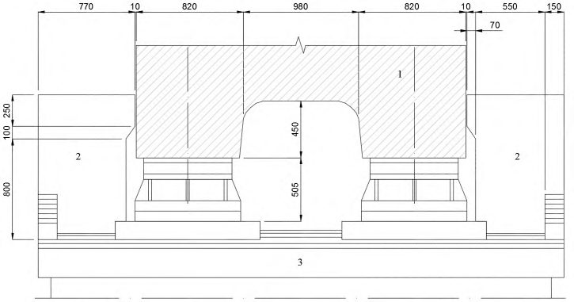
23,6 и 27,6 м
АПриложение А. (справочное)
Антисейсмические устройства мостов
Испытывая при землетрясении удары со стороны пролетных строений, железобетонные стопоры нередко повреждаются, а при толчках силой 9-10 баллов могут полностью разрушиться. Отказ стопоров влечет за собой сдвиг и обрушение на грунт пролетных строений, в то время как их повреждение приводит лишь к некоторым затруднениям при эксплуатации моста после сейсмического воздействия. Для смягчения ударов между пролетными строениями и стопорами рекомендуется размещать буферы.
А.2Буферы
А.2.1 В качестве буферов применяют резиновые прокладки, резинометаллические элементы и конструкции из стали с тарельчатыми пружинами.
Возможность использования в антисейсмических устройствах мостов резинометаллических элементов, применяемых в вагоностроении для уменьшения вибраций подвижного состава железных дорог, подтверждена испытаниями этих элементов на сжатие.
Испытания проводили с элементами, каждый из которых представлял собой резиновую прослойку толщиной 40 мм, заключенную между двумя стальными пластинками, которые имеют в плане форму прямоугольника с размерами 220×265 мм (рисунок А.2). Углы пластин закруглены радиусом 30 мм. Очерченные по параболе боковые поверхности резиновой прослойки вогнуты внутрь элемента.
Рисунок А.2 -Резинометаллический элемент буферного устройства
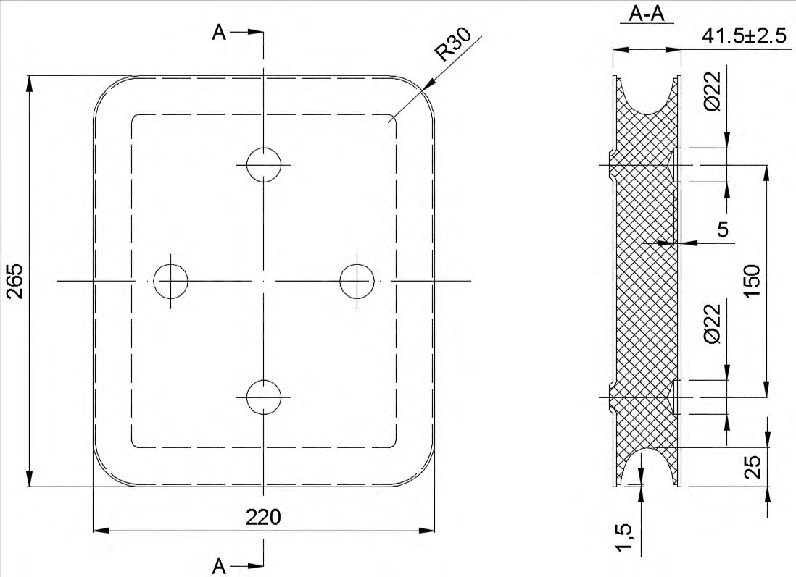
Для получения необходимой способности к поглощению энергии удара резинометаллические элементы могут собираться в пакеты. В данном эксперименте испытывали пакеты из трех элементов с доведением нагрузки на пакет до 800 кН. Нагрузка прикладывалась ступенями по 100 кН. Каждая ступень нагрузки выдерживалась 3-4 мин. Испытания проводились при температуре 18 °С-20 °С.
По результатам эксперимента построена зависимость осевой деформации пакета от сжимающей нагрузки (рисунок А.3). Среднее значение деформации испытанных пакетов при наибольшей нагрузке составило 27 мм. Отклонение для наименее и наиболее жестких пакетов находилось в пределах 15 % среднего значения деформации.
Рисунок А.3 Диаграмма сжатия комплекта из трех резинометаллических элементов
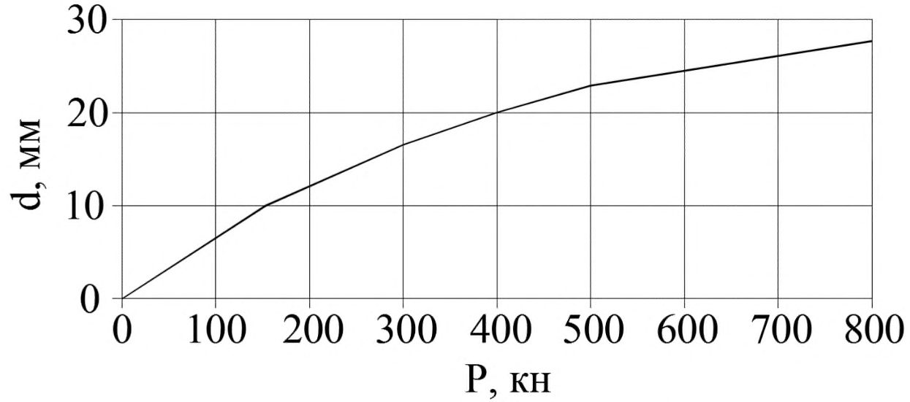
Следует отметить значительную кривизну диаграммы сжатия. Модуль упругости резины в пакете в начале нагружения составлял примерно 35 МПа, а в среднем для всего диапазона нагрузки - 75 МПа.
Повышение жесткости пакета с ростом нагрузки объясняется изменением конфигурации боковых поверхностей резиновых прослоек, увеличением площади их поперечного сечения, а также уменьшением объема микропор резины.
Наибольшая нагрузка воспринималась пакетами без разрушения, несмотря на то что уже при нагрузке 400 кН на боковых поверхностях резиновых прослоек появлялись заметные горизонтальные трещины. В связи с этим пакеты были испытаны на выносливость десятикратным нагружением с доведением силы сжатия за короткий промежуток времени (30 с) до 800 кН с последующей разгрузкой. После этого пакеты вновь подвергались постепенному сжатию с увеличением нагрузки ступенями по 100 кН. Сопоставление диаграмм сжатия, полученных до и после испытаний на выносливость, показало, что резинометаллические элементы в целом сохранили прочность и жесткость после испытаний на выносливость, хотя среднее значение для пяти пакетов наибольшей деформации сжатия уменьшилось примерно на 10 %.
Партия из 20 резинометаллических элементов была испытана на сжатие (в том числе при отрицательной температуре минус 30 °С) и на сдвиг. Сжатие двух элементов нагрузкой 2200 кН не привело к их разрушению. По свойствам резины срок службы буферов составляет не менее 60 лет.
Проведенные испытания позволяют сделать вывод о том, что резинометаллические элементы можно использовать в буферных антисейсмических устройствах мостов. Принимая во внимание значительный разброс упругих характеристик резины, следует проводить выборочные испытания элементов, предназначенных для установки на больших мостах. Необходимое число буферных устройств и резинометаллических элементов в каждом из них определяется расчетом, учитывающим прочностные и деформативные характеристики элементов.
А.2.2 В качестве буферов применяют также стальные конструкции, рабочим органом которых являются тарельчатые пружины. Буфер железнодорожного моста с пролетными строениями в виде ферм с ездой поверху показан на рисунке А.4.
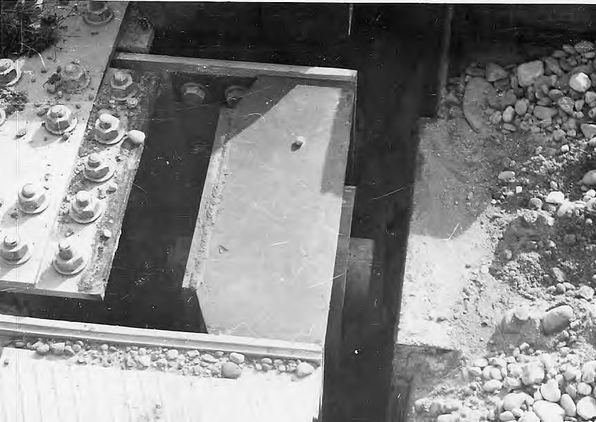
Рисунок А.4 Буфер, установленный в рабочее положение
На данном объекте буферные устройства установлены в скошенные концы крайних ферм. Каждый буфер выполнен в виде массивного стального сердечника, воспринимающего удар и опирающегося тыльной стороной головки на комплект тарельчатых пружин из рессорнопружинной стали. Пружины помещены в стальной корпус, защищающий их от атмосферного воздействия и засорения. Корпус буфера крепится болтами к узловым фасонкам фермы. Всего на мосту установлены четыре буферных устройства, рассчитанных на длительную эксплуатацию в условиях сурового климата. Общая масса буферов составляет 700 кг.
Рисунок А.5 -Буферное антисейсмическое устройство с тарельчатыми пружинами
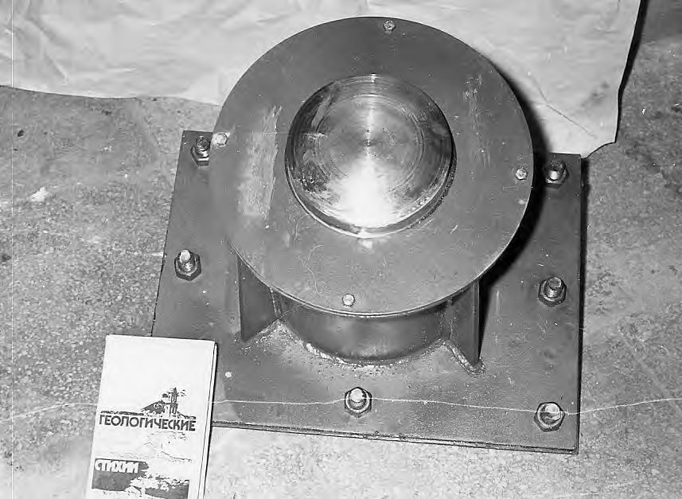
Для изготовления опытной партии тарельчатых пружин для буферов сталежелезобетонных пролетных строений (рисунок А.5) использовалась сталь марки 60С2А по ГОСТ 14959-79. Пружины имели внешний диаметр 𝐷 = 300 мм, внутренний диаметр 𝑑 = 122 мм, толщину δ = 20 мм, высоту внутреннего конуса 𝑓 = 6 мм. Фактические размеры пружин отличались от расчетных в пределах допусков. Пружины испытывались на твердость, жесткость, прочность и выносливость.
Проверка твердости проводилась на трех образцах, изготовленных из той же партии металла, что и пружины, и имеющих с ними одинаковую толщину. Твердость по Роквеллу термообработанных образцов составила от 43 до 45 единиц. Проверка соответствия деформации пружин при предельной рабочей нагрузке (450 кН) требуемому значению 7,8 мм проводилась выборочным контролем 10 % пружин партии. Измеренный прогиб комплекта из двух пружин при нагрузке 450 кН в среднем составлял 8,1 мм (рисунок А.6). При этом отклонение контролируемой деформации от расчетного значения было 4 % при допускаемом отклонении ±5 %.
Рисунок А.6 Диаграмма сжатия комплекта из двух тарельчатых пружин при кратковременном нагружении
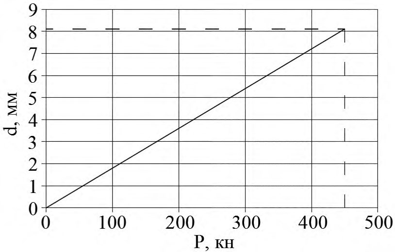
Прочность пружин проверялась заневоливанием (полным сжатием) комплектов в течение 24 ч. Все три комплекта успешно прошли испытания на полное сжатие (рисунок А.7). После разгрузки пружины не имели трещин и надрывов.
1 - нижняя плита; 2 - верхняя плита; 3 - болт; 4 - гайка; 5
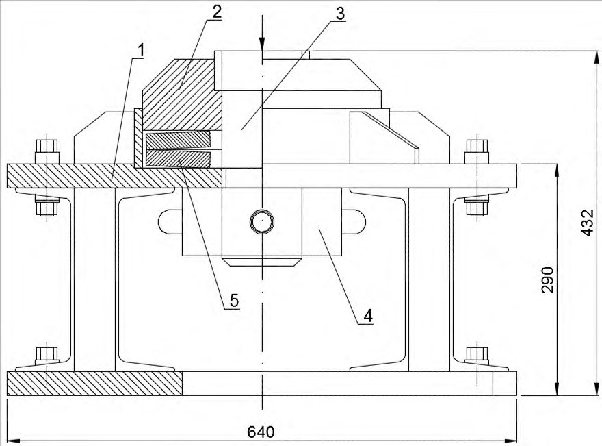
- тарельчатая пружина
Рисунок А.7 Испытание тарельчатых пружин на полное сжатие
Проверка выносливости проводилась многократным нагружением (100 циклов) от 𝑃min = 0 до 𝑃 max = 450 кН трех комплектов пружин. Высота внутреннего конуса пружин в свободном состоянии после испытаний на выносливость уменьшилась в среднем на 0,2 мм. Трещин и надрывов пружины не получили. Таким образом, испытаниями было установлено, что партия пружин удовлетворяет требованиям норм к этим изделиям и может быть использована при строительстве в буферных антисейсмических устройствах мостов.
А.3Анкеры
Вертикальные анкеры устанавливают в целях повышения устойчивости опор и пролетных строений против опрокидывания, а также для предотвращения повреждений конструкций, возникающих при подбрасывании опорных узлов балок, ферм и рам. Горизонтальные анкеры могут использоваться для повышения сопротивления устоев и пролетных строений сдвигу вдоль оси моста в направлении русла.
При расчетной сейсмичности 9 баллов пролетные строения с ездой поверху длиной от 18,8 до 34,2 м закрепляют за середины домкратных балок. Анкер устроен в виде стальной шарнирной конструкции (рисунок А.8). Масса металла анкерных устройств на одно пролетное строение составляет около 270 кг.
Пролетные строения длиной 45,8 и 55,8 м закрепляются за домкратные балки в местах постановки ребер жесткости с помощью тяг из уголков, заделанных в подферменные плиты опор. Масса металла анкерных устройств на одно пролетное строение длиной 45,8 и 55,8 м составляет примерно 1700 кг.
При совместном учете сейсмической нагрузки и веса железнодорожных ферм с ездой понизу в анкерных устройствах по расчету не возникает растягивающих сил. Поэтому для всей серии этих конструкций в диапазоне пролетов от 33 до 110 м анкерные устройства приняты одинаковыми облегченного типа с массой 336 кг стали, достаточной для предотвращения подбрасывания ферм, оказавшихся поблизости от эпицентра землетрясения.
1 - домкратная балка пролетного строения; 2 - анкерное устройство; 3 - опора; 4 -высокопрочные болты
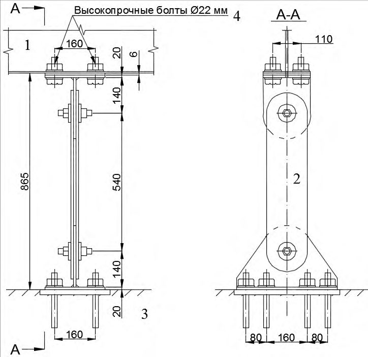
Рисунок А.8 Анкерные устройства для сталежелезобетонных пролетных строений длиной до 34,2 м
Анкеровка балочных разрезных сталежелезобетонных пролетных строений на автомобильных дорогах осуществляется таким же способом, как для железнодорожных балок и ферм. Для пролетного строения длиной 42,6 м масса анкерного устройства для закрепления одного конца конструкции составляет 122,7 кг.
А.4Сцепные устройства
А.4.1 Разрезные пролетные строения могут обрушиться из-за сейсмодеформаций грунта и опор, приводящих к горизонтальным перемещениям подферменных плит из проектного положения. При возможных сейсмотектонических и оползневых перемещениях грунта в створе моста, а также при асинхронных колебаниях опор прибегают к уширению подферменных площадок опор или устанавливают сцепные антисейсмические устройства, ограничивающие не только относительные горизонтальные, но и относительные вертикальные перемещения смежных концов соседних ферм (балок). Сцепное устройство рассчитывают так, чтобы оно выдерживало опорную реакцию повисающей конструкции.
А.4.2 Конструктивное решение сцепки в каждом конкретном случае определяется ее функцией и типом пролетного строения. Для объединения металлических и сталежелезобетонных балок со сплошной стенкой обычно используются накладки, прикрепляемые к вертикальным листам главных балок болтами. Отверстия под болты в стенке одной из балок делают овальными, для того чтобы не возникало температурных напряжений в конструкции и обеспечивалась свобода поворота концов пролетного строения. При необходимости соединения сталежелезобетонного пролетного строения с железобетонным или двух железобетонных конструкций сцепное устройство может быть закреплено на железобетонных ребрах или плите.
А.4.3 Сцепные устройства стальных ферм устанавливают в узлах пролетных строений. Типовое сцепное устройство железнодорожных ферм состоит из вертикальных листов, поперечных планок и опорного стержня. Отверстия в узловых фасонках под болты и опорный стержень сверлят по месту с учетом фактического положения пролетных строений. Отверстия под опорный стержень в вертикальных листах сцепного устройства делают овальными. Размеры отверстий подбирают из условия свободы линейных и угловых перемещений соединяемых концов ферм. Диаметр опорного стержня определяют расчетом на срез и смятие под нагрузкой от собственного веса фермы. Масса металла, необходимого для сцепки ферм с ездой поверху длиной 55 м, составляет 900 кг.
А.5Прерыватели колебаний
А.5.1 Прерыватели колебаний (гидравлические стопоры) используются для перераспределения усилий в системе с более нагруженных частей сооружения на менее нагруженные. Например, если скальные грунты по оси мостового перехода залегают глубоко, при проектировании моста неразрезной системы целесообразно перераспределить сейсмическую нагрузку от массы пролетного строения с анкерной опоры на все или часть опор моста.
Гидравлические стопоры состоят из заполненного жидкостью полого цилиндра, в котором размещается шток, соединенный с перфорированным диском. Концы цилиндра и штока соединяются с конструкциями моста, могущими совершать перемещения друг относительно друга.
Гидравлические стопоры могут работать в двух режимах (рисунок А.9). Первый режим относится к медленно изменяющимся воздействиям (изменение температуры среды, ползучесть и усадка бетона). При таких воздействиях требуется незначительное усилие для перемещения перфорированного диска в заполненном жидкостью цилиндре. Таким образом, в обычных условиях эксплуатации стопор не ограничивает перемещений соединяемых конструкций и практически не влияет на напряженно-деформированное состояние моста.
При быстрых относительных перемещениях смежных частей моста, возникающих при землетрясениях, стопор блокирует эти перемещения, работая как жесткая связь, соединяющая разделенные деформационным швом части сооружения. Изменение динамической расчетной схемы моста с балочной неразрезной на рамную с продольно-неподвижными опорными частями на всех или части опор может существенно уменьшить усилия в анкерной опоре и повысить сейсмостойкость моста в целом.
Рисунок А.9 Схема работы гидравлического стопора
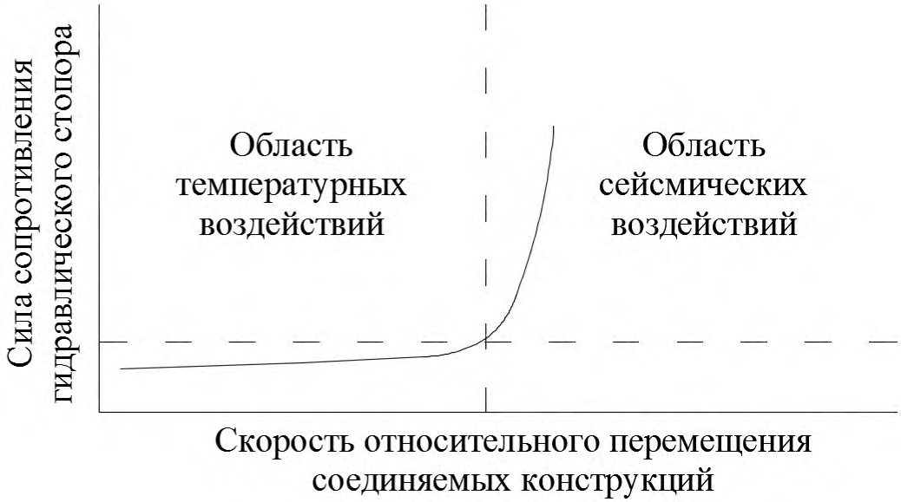
А.5.2 Прерыватели колебаний могут использоваться также при строительстве висячих и вантовых мостов, в особенности в районах прохождения тайфунов, глубоких очагов разрушительных землетрясений и при расположении пилонов в акватории морей, в целях обеспечения динамической устойчивости пилонов моста при воздействии турбулентного воздушного потока, штормовых и сейсмических волн. Прерыватели устанавливают в целях уменьшения периода собственных поперечных колебаний пилонов на период постройки до безопасного уровня. Схема подкрепления пилона вантового моста показана на рисунке А.10.
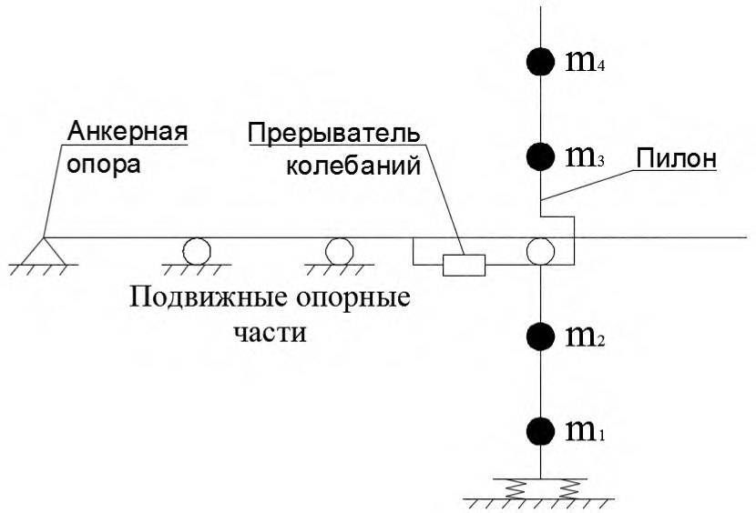
m
1 - m
4 - массы частей пилона
Рисунок А.10 Схема установки прерывателя колебаний
А.6Гасители колебаний
А.6.1 Масса пролетного строения неразрезной системы длиной более 500 м нередко превышает 10 000 т, а сейсмическая нагрузка от этой массы достигает нескольких тысяч тонн. При расчетной сейсмичности 9 баллов приемлемые решения по расходу материалов получаются только в том случае, когда основанием массивного фундамента анкерной опоры служит скальный грунт.
Если прочные коренные породы залегают глубоко, принимают специальные меры для уменьшения сейсмической нагрузки и амплитуд горизонтальных колебаний сооружения. К таким мерам относятся снижение массы пролетного строения за счет использования высокопрочной стали в главных балках, связях и плите проезжей части, распределение продольной сейсмической нагрузки от массы пролетного строения на несколько промежуточных опор, применение антисейсмических устройств для гашения колебаний (демпферов).
А.6.2 Характерный пример применения демпферов - виадук через долину реки в районе сейсмичностью 9 баллов.
Виадук имеет общую длину около 900 м при высоте опор в средней части перехода более 40 м. Пролетное строение запроектировано из стали, имеет коробчатое сечение с верхней ортотропной плитой. Высота главной балки 3,6 м, ширина проезжей части 11,5 м. Деформационный шов, устроенный над одной из промежуточных опор, делит пролетное строение на две неравные части длиной 810 и 100 м.
Большая секция пролетного строения запроектирована в виде неразрезной балки, перекрывающей десять пролетов длиной от 53 до 126 м. Масса неразрезной секции составляет 10 785 т.
Коренные породы в створе виадука представлены мергелем, песчаником и аргиллитом. В зоне выветривания на глубину до 5 м от кровли скальные грунты имеют низкую прочность.
На склонах долины коренные породы перекрываются чехлом делювиальных и оползневых накоплений, представленных суглинками и глинами с включением обломочного материала. Мощность четвертичных отложений колеблется от 3 до 17 м.
Пойму и русло реки слагают аллювиальные и аллювиально-лиманные отложения (гравий, галька, глина). Вскрытая разведочными скважинами мощность галечников достигает 29 м.
Основная часть виадука запроектирована в виде рамно-неразрезной системы с неподвижными опорными частями на семи промежуточных опорах большой высоты и подвижными опорными частями на четырех крайних низких опорах (рисунок А.11).
1 - неподвижные опорные части; 2 - подвижные опорные части; 3 - гидравлические демпферы; № 1-№ 11 - опоры
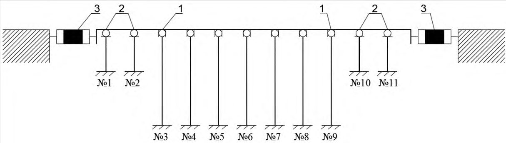
Рисунок А.11 Расчетная схема виадука
Колебания опор с большой амплитудой вдоль оси перехода способны повредить опорные части, деформационные швы и другие конструкции виадука. Для уменьшения сейсмической нагрузки от массы пролетного строения и ограничения амплитуды колебаний предельно допустимым значением 25 см между неразрезным пролетным строением и жесткими концевыми опорами установлены гидравлические гасители колебаний.
А.6.3 Сущность работы гидравлического демпфера представлена зависимостью его реакции от скорости нагружения. Из графика (рисунок А.12) видно, что демпфер слабо реагирует на медленное нагружение (на изменение длины пролетного строения от перепада температур в течение суток), но создает значительное сопротивление сейсмическим колебаниям, которые в данном случае имеют скорость около 0,5 м/с.
Рисунок А.12 Зависимость реакции демпфера от скорости его нагружения
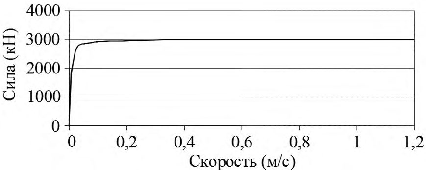
Гасители колебаний выпускаются для осевых нагрузок до нескольких сотен тонна-сил и возможных относительных перемещений соединяемых частей моста до 450 мм и более. От этих исходных данных зависят диаметр цилиндрического корпуса и его длина.
Корпус демпфера имеет надежную защиту от неблагоприятных атмосферных воздействий. Для защиты от коррозии наружные поверхности корпуса покрываются грунтовкой из слоя цинка с последующей окраской двумя слоями краски. Внутренние поверхности демпфера имеют специальное покрытие, разработанное предприятием-изготовителем. В качестве рабочей жидкости используется силиконовое масло, содержащее присадки для защиты от старения. Рабочая жидкость имеет характеристики, малоизменяющиеся в широком диапазоне температур.
Демпферы запроектированы в предположении, что температура воздуха изменяется в пределах от минус 20 °С до плюс 50 °С. При землетрясении в течение короткого промежутка времени гашения колебаний моста температура рабочей жидкости может возрасти до 200 °С.
Расчетный срок службы гидравлических демпферов не менее 30 лет. Устройства не требуют обслуживания при эксплуатации, но предприятие-изготовитель рекомендует проводить осмотр демпферов с периодичностью один раз в три года.
А.7Амортизаторы
А.7.1 Амортизаторами являются конструкции и устройства, позволяющие уменьшать сейсмическую нагрузку от масс и регулировать распределение нагрузки между частями сооружения. К амортизаторам относятся гибкие опоры с парными стойками, резиновые опорные части, устройства с рабочим органом в виде тарельчатых пружин и ряд других конструкций.
При строительстве опор виадуков в сейсмических районах применяют рамные железобетонные опоры, имеющие вертикальные или наклонные стойки из сборного (монолитного) железобетона. Такое конструктивное решение позволяет уменьшить массу опор и получить оптимальные динамические характеристики виадука, что дает возможность максимально понизить сейсмическую нагрузку от масс опор и пролетного строения.
Виадуки с рамными опорами часто сооружаются в районах пересечения железной дорогой горных хребтов. Опоры таких мостов обычно проектируют в виде одноярусных и двухъярусных пространственных рам. В качестве стоек опор используют железобетонные столбы диаметром поперечного сечения 0,8 м и длиной 15 м. Плиты фундаментов, горизонтальные диафрагмы и насадки выполняют из монолитного железобетона. Высоту рамных опор обычно принимают до 35 м от обреза фундаментов.
А.7.2 Конструкции железобетонных опор с телом в виде монолитных парных стоек применяют при строительстве эстакад и виадуков на автомобильных и городских дорогах.
По расчету на температурное и сейсмическое воздействия промежуточные опоры рамнонеразрезной части виадука (рисунок А.13) приняты гибкими в виде рамных надстроек над цоколем с небольшой жесткостью стоек в направлении оси перехода (высота стоек до 28,5 м; толщина 1,2 м). Верх стоек объединен железобетонным ригелем.
Рисунок А.13 Промежуточная опора виадука
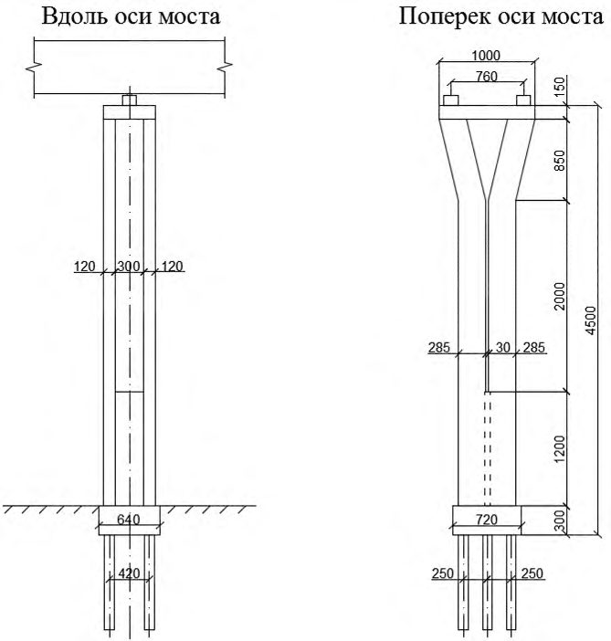
Сейсмическая нагрузка от масс пролетного строения зависит от периода собственных колебаний сооружения, уменьшаясь примерно в 2,5 раза при увеличении периода от интервала резонансных периодов (0,1-0,5 с для средних грунтов) до периодов, расположенных вне зоны резонансных колебаний (1,2 с и выше).
Назначением высоты гибких стоек в интервале 25-30 м можно получить оптимальные динамические характеристики опоры и существенно снизить напряжения в рамной надстройке и силы (моменты), передаваемые на цоколь и свайное основание (рисунок А.14). В случае применения стоек большей длины усилия в сечениях опоры уменьшаются незначительно, однако повышение гибкости опоры приведет к существенному росту амплитуд колебаний ригеля и повышению напряжений за счет роста эксцентриситета нагрузки от собственного веса пролетного строения.
Рисунок А.14 Зависимость момента в уровне подошвы плиты фундамента от высоты парных стоек
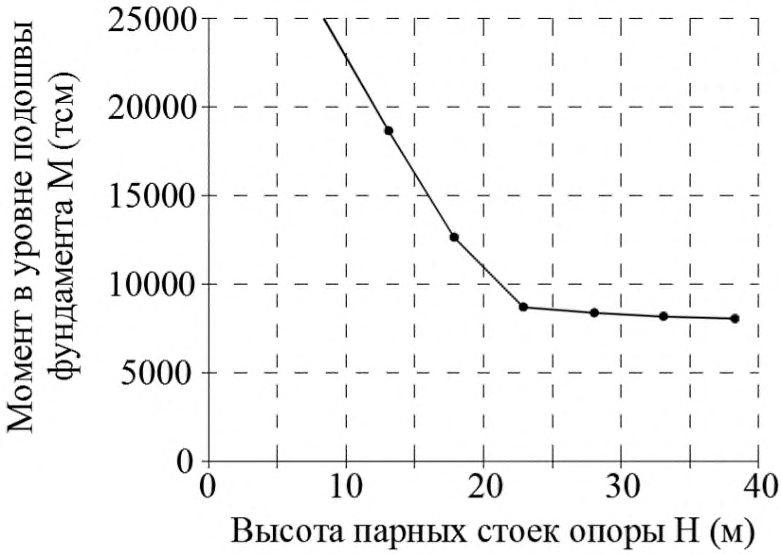
А.8Комбинированные антисейсмические устройства
А.8.1 К поражающим факторам землетрясений относятся инерционные силы горизонтального и вертикального направлений, сейсмическое боковое давление грунта, сейсмическое давление воды, удары в швах между смежными секциями моста, смещения фундаментов опор из проектного положения при распространении сейсмических волн, тектонические разрывы, оползни береговых склонов, обвалы бортов ущелий, осадки покровных отложений и др. Перечисленные факторы обычно проявляются в различных сочетаниях в зависимости от региональных сейсмотектонических и местных инженерно-геологических условий.
Многофакторный характер сейсмической опасности требует разработки при проектировании мостов комплекса мер антисейсмической защиты. В качестве примера комплексных антисейсмических мероприятий в настоящем приложении рассмотрены меры защиты от землетрясений железнодорожного моста.
Мост сооружен на участке с неблагоприятными тектоническими условиями. По оси моста залегают слабовыветрелые гранодиориты, нарушенные на участке шириной 30 м тектоническим разломом. В зоне разлома скальная порода раздроблена до состояния щебня. Монолитные устои и сборно-монолитные промежуточные опоры вынесены из зоны дробления. Пролеты моста перекрыты стальными фермами с ездой поверху. Фундаменты всех опор массивные мелкого заложения.
С учетом неблагоприятных тектонических условий были разработаны дополнительные меры антисейсмической защиты мостового перехода, направленные против сброса пролетных строений с опор, подбрасывания опорных узлов ферм, обрушения ферм при возможном выходе тектонических разрывов на поверхность участка мостового перехода, а также против повреждения конструкций от ударов ферм в шкафные стенки устоев. Для защиты моста на опорах и пролетных строениях установлены стопорные, анкерные, сцепные и буферные устройства (рисунок А.15).
1 - стопорные и анкерные устройства; 2 - сцепные устройства; 3 - буферы; № 1-№ 4 опоры
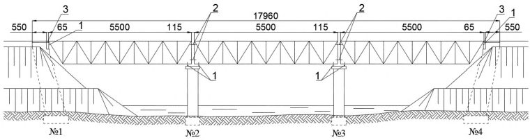
Рисунок А.15 Балочный мост, построенный на участке с неблагоприятными тектоническими условиями
А.8.2 Совмещение в одной конструкции двух и более функций рассмотренных антисейсмических устройств позволяет уменьшить расход материалов на антисейсмическую защиту мостовых сооружений. В связи с этим в мостостроении нашли широкое применение комбинированные устройства.
Для железнодорожных ферм длиной 55 м с ездой поверху было запроектировано комбинированное антисейсмическое устройство, препятствующее сдвигу опорных узлов поперек оси моста и их подбрасыванию. Устройство (рисунок А.16) состоит из нижнего упора, связанного с опорой анкерными болтами диаметром 36 мм, верхнего упора, прикрепленного к ферме высокопрочными болтами диаметром 22 мм, и шпильки диаметром 50 мм. Анкерные болты заделываются с помощью эпоксидной смолы в оголовок опоры. Расход стали в устройствах на защиту одной фермы составляет 1190 кг.
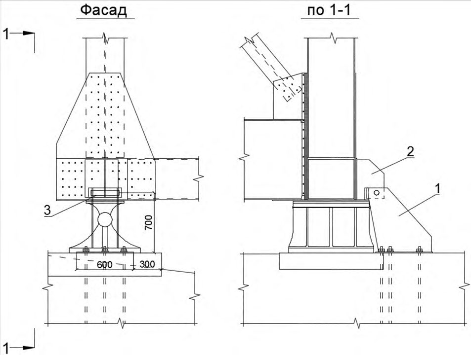
1 - нижний упор; 2 - верхний упор; 3 - шарнир
Рисунок А.16 Комбинированное антисейсмическое устройство для защиты ферм длиной 55 м
А.8.3 Комбинированное устройство применено также для сталежелезобетонного пролетного строения длиной 45,8 м (рисунок А.17). Эта конструкция защищает пролетное строение от поперечного сдвига и подбрасывания опорных узлов, а также смягчает удары пролетного строения в стопоры. В качестве буферов здесь использованы резинометаллические элементы, работающие на сжатие.
1 - железобетонный стопор; 2 - стальной упор; 3 - анкерные болты; 4 - резинометаллический элемент
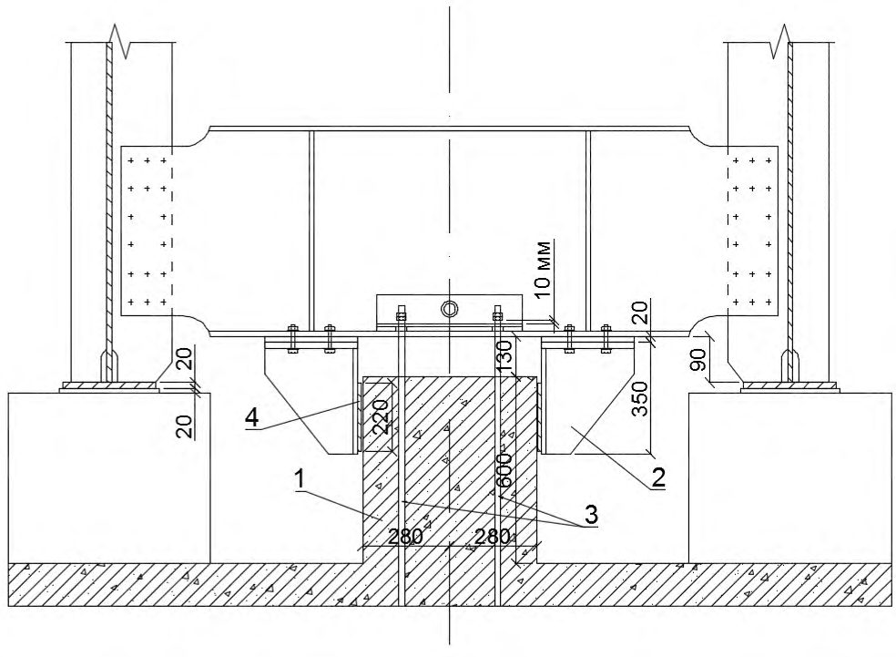
Рисунок А.17 Комбинированное антисейсмическое устройство сталежелезобетонного пролетного строения длиной 45,8 м
А.8.4 Пролетные строения из пустотных плит длиной от 15 до 18 м могут применяться во всех сейсмически опасных районах. Для закрепления плит от смещения вдоль и поперек оси моста, а также от подбрасывания их при землетрясении в крайних плитах пролетного строения по оси опирания устанавливаются закладные детали, к которым приваривается антисейсмическое устройство с вертикальной трубой на конце (рисунок А.18). Труба надевается сверху на анкерный болт, заделанный в ригеле или насадке опоры. Перемещения плиты относительно насадки в вертикальном направлении ограничиваются шайбой, которая приваривается к анкерному болту на 10 мм выше верхнего конца трубы и закрепляется сверху гайкой. Расход стали на четыре устройства, закрепляющие одно пролетное строение, составляет 181 кг.
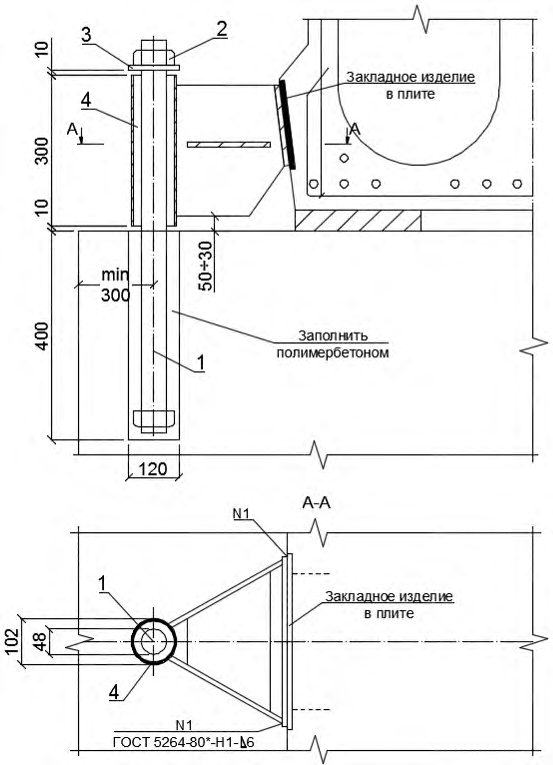
1 - анкерный болт; 2 - гайка; 3 - шайба; 4 - труба
Рисунок А.18 Комбинированное антисейсмическое устройство плитных пролетных строений
БПриложение Б. (справочное)
Гашение энергии колебаний мостов
Б.1 В мостах энергия колебаний поглощается за счет работы по преодолению сил внутреннего трения, а также трения в подвижных соединениях (опорных частях, деформационных швах) и рассеивается при деформациях грунта, окружающего фундаменты опор и обсыпные устои, а также расходуется на преодоление сопротивления воздушной и водной среды. Значительная часть энергии колебаний моста может быть поглощена гидравлическими гасителями колебаний (демпферами), используемыми с этой целью при строительстве мостов в районах с большими сейсмическими и ветровыми воздействиями.
Б.2Учет демпфирующих свойств конструкций
В формуле, определяющей сейсмическую нагрузку от масс сооружений спектральномодальным методом, в качестве одного из сомножителей присутствует коэффициент 𝐾ψ , учитывающий влияние на нагрузку нестандартного поглощения и рассеяния энергии по основной форме колебаний. Значение коэффициента 𝐾ψ изменяется от 0,7 для гидротехнических сооружений из грунтовых материалов до 1,5 для высоких сооружений с небольшими размерами в плане.
При проектировании мостов в Российской Федерации коэффициент 𝐾ψ обычно принимают равным 1,0. Для мостов, оборудованных гасителями колебаний, пилонов вантовых мостов, стальных пролетных строений большой длины с уменьшенным декрементом упругих колебаний, допускается определять коэффициент 𝐾ψ на основании данных специального расчета, принимая его не менее 0,7 и не более 1,5.
При проектировании автодорожных мостов для нахождения коэффициента 𝐾ψ применяют формулу
где h - относительный коэффициент затухания колебаний сооружения.
К сооружениям со стандартным затуханием колебаний относятся объекты, для которых 𝐾ψ = 1,0 . В этом случае относительный коэффициент затухания h = 0,05 (5 %) и логарифмический декремент колебаний δ = 0,314 . Наибольшие значения h и δ , соответствующие 𝐾ψ = 0,7 , равны hmax = 0,16 и δmax = 1,00 . Наименьшие h и δ , соответствующие 𝐾ψ = 1,5 , характерны для висячих, вантовых мостов и балочных разрезных пролетных строений из стали ( hmin = 0,012 и δmin = 0,075 ).
Для применения формулы (Б.1) к сооружениям с нестандартным затуханием колебаний необходимо оценить логарифмический декремент колебаний проектируемого сооружения. При этом используются данные о декрементах колебаний, полученные при испытаниях аналогичных объектов и справочные материалы.
В качестве справочного материала для проектирования автодорожных мостов допускается использовать следующие значения относительного коэффициента затухания h :
- стальные пролетные строения 0,02 ≤ h ≤ 0,03 ;
- стальные опоры 0,03 ≤ h ≤ 0,05 ;
- железобетонные опоры 0,05 ≤ h ≤ 0,10 ;
- фундаменты 0,10 ≤ h ≤ 0,30 .
Б.3Методика нахождения параметров затухания колебаний мостов, оборудованных демпферами
При нахождении характеристик затухания h и δ , а также коэффициента поглощения энергии колебаний ψ исходят из следующих предпосылок:
- 1) действие различных механизмов потери энергии колебаний суммируется. Характеристики δ , h и ψ принимают в качестве констант, соответствующих основной форме собственных колебаний системы;
- 2) при определении характеристик демпфирования необходимо сначала установить их значения для отдельных частей сооружения и демпферов, а затем найти эти характеристики для сооружения в целом, т. е. расчетные (эквивалентные) характеристики затухания должны учитывать все виды потерь в различных частях и устройствах сооружения;
- 3) при оценке энергии колебаний и ее потерь следует учитывать допустимые трещины и пластические деформации в элементах сооружения;
- 4) для оценки характеристик δ , h и ψ используется теория колебаний осцилляторов с затуханием.
Затухающие колебания системы с одной массой описываются дифференциальным уравнением второго порядка
где 𝑦 - отклонение массы от положения равновесия; 𝑚 - масса осциллятора; 𝑛 - коэффициент вязкого сопротивления;
СП 268.1325800.2016 𝑘 - коэффициент упругого сопротивления.
Уравнение (Б.2) приводят к стандартному виду делением всех членов на 𝑚 . В результате получают уравнение
где ε = 𝑛 2𝑚 - коэффициент затухания; φ 2 = 𝑘 𝑚 - квадрат частоты φ, рад/с, колебаний осциллятора.
Для мостовых сооружений имеет место неравенство ε 2 ≪φ 2 . В этом случае решением уравнения (Б.3) является функция
где φ1 = (φ 2 -ε 2 ) 0,5 ; 𝐴 = [𝑦 н 2 +( ε𝑦н+𝑉 н φ1 ) 2 ] 0,5 ; 𝜈1 = arctg φ1𝑦н ε𝑦н+𝑉 н ; здесь 𝑦н и 𝑉 н - заданные начальные условия (отклонение от положения равновесия и скорость массы 𝑚 при 𝑡 = 0 ).
Имея в виду, что коэффициент затухания 𝜀 существенно меньше частоты 𝜑 , можно полагать φ1 = φ и период колебаний осциллятора определять без учета демпфирования, т. е. по формуле
Из формулы (Б.4) следует, что отношение предыдущей амплитуды колебаний 𝑦п к последующей амплитуде 𝑦п+1 остается неизменным и равным 𝑦п 𝑦п+1 = 𝑒 ε𝑇 .
Натуральный логарифм отношения амплитуд называется логарифмическим декрементом колебаний. Формулой (Б.6) удобно пользоваться при оценке характеристик рассеяния энергии колебаний сооружений по данным натурного эксперимента:
Движение осциллятора перестает быть колебательным при критических значениях коэффициента затухания εкр = φ . Коэффициент затухания, выраженный в долях критического коэффициента εкр , называется относительным коэффициентом затухания h = ε φ . С учетом ε = 𝑛 2𝑚 и φ 2 = 𝑘 𝑚 коэффициент h определяют по формуле
Формула (Б.7) показывает, что коэффициент h содержит информацию об упругих, демпфирующих и инерционных свойствах осциллятора. Его значение может быть меньше, равно или больше единицы. В первом случае система имеет слабое затухание и совершает гармонические движения с амплитудой, уменьшающейся по экспоненте. Если h ≥ 1,0, то движение массы перестает быть колебательным.
Соотношение (Б.8) между h и δ показывает, что при δ = 2π движение становится апериодическим:
Для характеристики потерь энергии за один цикл колебаний используют коэффициент поглощения энергии
где 𝐸н - энергия колебаний в начале цикла;
Δ𝐸 = 𝐸н -𝐸к - потеря энергии за один цикл колебаний.
Потенциальная энергия деформированной системы:
- в начале цикла
- в конце цикла
где 𝑘 - коэффициент жесткости системы;
𝐴1 и 𝐴2 - последовательные амплитуды колебаний.
Потеря энергии колебаний за один цикл
Учитывая, что 𝐴1 = 𝐴𝑒 -ε𝑇 и 𝐴2 = 𝐴𝑒 -2ε𝑇 , ( 𝐴2 2 𝐴 1 2 ) = ( 𝑒 -2ε𝑇 𝑒 -ε𝑇 ) 2 = 𝑒 -2ε𝑇 . Следовательно,
Искомый коэффициент поглощения ψ связан с декрементом колебаний δ соотношением
График коэффициента поглощения ψ в зависимости от декремента колебаний δ показан на рисунке Б.1.
Рисунок Б.1 -График коэффициента поглощения энергии колебаний за один цикл
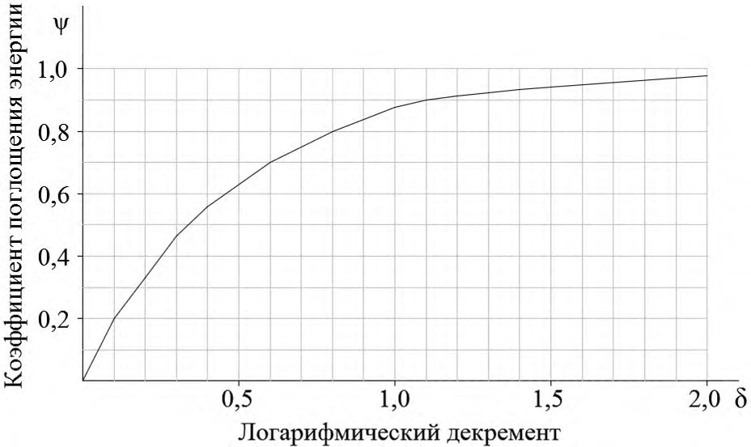
По соотношению (Б.12) определяют зависимость, по которой определяется декремент колебаний δ при известном коэффициенте поглощения ψ :
Б.4Пример определения сейсмической нагрузки с учетом поглощения энергии колебаний демпферами
Приложение приведенных зависимостей показано ниже на примере расчета промежуточной опоры автодорожного путепровода, оборудованного гидравлическими демпферами.
Путепровод расположен в районе сейсмичностью 9 баллов. Неразрезное пролетное строение перекрывает два пролета, опираясь на продольно-подвижные опорные части на крайних опорах и на продольно-неподвижные опорные части на промежуточной опоре. Между концами пролетного строения и крайними опорами установлены гидравлические демпферы (по два демпфера на каждой опоре). Осевая нагрузка на один демпфер 5 тс, ход поршня в цилиндрах ±15 см. Принятая конструкция демпферов соответствует колебаниям пролетного строения относительно крайних опор при расчетной амплитуде относительных перемещений 10,6 см.
Расчетная схема секции включает в себя шесть масс, представляющих инерционные свойства фундамента, надфундаментных частей опоры и пролетного строения. Веса частей секции и расчетные скорости их колебаний при сейсмическом воздействии, найденные спектрально-модальным методом, приведены в таблице Б.1.
Таблица Б.1 Массы и скорости колебаний секции путепровода
СП 268.1325800.2016
| Номера частей секции, считая от плиты фундамента промежуточной опоры | Веса частей расчетной схемы 𝑄 𝑘 , тс | Скорости горизонтальных колебаний масс 𝑉 𝑘 , см/с |
|---|---|---|
| 1 | 269,7 | 9,7 |
| 2 | 50,4 | 11,8 |
| 3 | 45,5 | 23,9 |
| 4 | 20,6 | 33,4 |
| 5 | 20,6 | 36,2 |
| 6 | 1854,0 | 38,1 |
Считая за начало цикла вертикальное положение промежуточной опоры, при котором кинетическая энергия системы достигает максимума, а потенциальная энергия, обусловленная деформациями конструкции, равна нулю, определяют кинетическую энергию
Из этого значения на энергию колебаний фундамента приходится 𝐸нф = 0,3 тс·м, на энергию колебаний тела опоры выше обреза фундамента 𝐸ноп = 0,8 тс·м и на энергию колебаний пролетного строения 𝐸нпр = 27,4 тс·м.
Коэффициенты поглощения энергии колебаний ψ определены по формулам (Б.8) и (Б.12) при относительном коэффициенте затухания h для фундамента 0,2, для опоры 0,1 и для пролетного строения 0,02.
Коэффициент h = 0,2 учитывает рассеяние энергии за счет сил внутреннего трения в массивной плите свайного ростверка и сил сопротивления грунта обратной засыпки пазух котлована, а также уход энергии в грунт ниже подошвы фундаментной плиты и потери на деформации столбов. Коэффициенту h = 0,2 соответствует декремент колебаний δ = 1,256 и коэффициент поглощения ψ = 0,92 .
Потеря кинетической энергии телом опоры происходит за счет внутреннего трения в ее кладке и аэродинамического сопротивления. Коэффициенту h = 0,1 соответствуют декремент δ = 0,628 и коэффициент поглощения ψ = 0,71 .
Потеря энергии колебаний пролетным строением вызывается трением в подвижных опорных частях и гашением в деформационных швах. Коэффициенту h = 0,02 соответствует декремент δ = 0,126 и коэффициент поглощения ψ = 0,22 .
К этим потерям следует добавить поглощение энергии колебаний в четырех демпферах где 𝑛 - число демпферов;
𝐴 = 10,6 см - амплитуда колебаний пролетного строения;
𝑆 = 5 тс - рабочая нагрузка на один демпфер.
Общая потеря энергии за один цикл колебаний секции из промежуточной опоры и пролетного строения
Вычисления по формуле (Б.15) позволяют найти потерю энергии Δ𝐸 = 15,35 тс·м. Эквивалентный коэффициент поглощения энергии в системе ψ = Δ𝐸 𝐸н = 0,54 . Эквивалентный относительный декремент колебаний δ = ln(1-ψ) 2 = 0,39 . Эквивалентный относительный коэффициент затухания h = δ 2π = 0,062 .
По найденному h с использованием формулы (Б.1) определяют поправочный коэффициент к сейсмической нагрузке, учитывающий необратимые потери энергии при колебаниях средней секции путепровода 𝐾ψ = 1,5 40h+1 +0,5 = 0,93 , т. е. нагрузка за счет рассеяния энергии колебаний преимущественно в демпферах уменьшается на 7 %.
Для снижения сейсмической нагрузки более чем на 7 % необходимо увеличить способность демпферов рассеивать энергию колебаний системы. Например, можно использовать демпферы с осевой рабочей нагрузкой 10 тс вместо 5 тс. В этом случае потеря энергии в системе за первый цикл колебаний Δ𝐸 = 23,8 тсм. При этом характеристики затухания увеличатся до следующих значений: ψ = 0,84; δ = 0,92 , h = 0,15 , а коэффициент 𝐾ψ уменьшится до 0,71.
Следовательно, установка на путепроводе четырех демпферов с рабочей нагрузкой 10 тс на каждый агрегат позволяет уменьшить сейсмическую нагрузку на среднюю секцию сооружения, направленную вдоль его оси, на 29 %.
ВПриложение В. (справочное)
Определение сейсмической нагрузки от масс сооружения в случае неравномерного распределения переносных ускорений
Для протяженных мостов переносные ускорения масс сооружения по длине объекта могут быть неодинаковыми. Различие переносных ускорений масс обусловлено неоднородностью пород, слагающих участок строительства, значительной протяженностью сооружения и конечной скоростью распространения сейсмических волн, в результате чего колебания грунта в основаниях соседних опор могут происходить в противоположных фазах или в одной фазе, но с различными амплитудами. В частности, переносные вертикальные ускорения масс балки жесткости висячего моста изменяются по длине пролета, если горизонтальные колебания пилонов происходят в противоположных фазах.
Колебания линейно деформируемой упругой системы, несущей 𝑛 масс, определяются следующими матрицами:
- 1) 𝐶 - квадратная порядка 𝑛 матрица коэффициентов жесткости;
- 2) 𝑇 - то же, диссипации энергии колебаний;
- 3) 𝑀 - диагональная порядка 𝑛 матрица масс.
Возмущение системы задается вектором смещений масс 𝑍̅ 0 (𝑡) при переносном движении, т. е. движении системы без учета ее деформаций силами инерции. Перемещения масс при относительном движении, обусловленном деформативностью элементов системы и опорных связей силами инерции, обозначают 𝑍̅ (𝑡) .
Уравнение колебаний масс выражает условие равновесия системы под действием сил инерции 𝑀[𝑍̅ ̈ 0 (𝑡) + 𝑍 ̅ ̈ (𝑡)] , внутреннего трения 𝑇𝑍̅ ̇ (𝑡) , упругости 𝐶𝑍̅ (𝑡) и имеет вид
В начальный момент времени перемещения 𝑍̅ (𝑡) и скорости 𝑍̅ ̇ (𝑡) относительного движения масс равны нулю. Следовательно, искомая функция должна удовлетворять дифференциальному уравнению (В.1) и начальным условиям
Уравнение (В.1) с начальными условиями (В.4) решается методом интегрального преобразования Лапласа. Изображения по Лапласу функций 𝑍̅ (𝑡) и 𝑍̅ 0 (𝑡) обозначают соответственно 𝑍̅ ∗ (𝑝) и 𝑍̅ 0 ∗ (𝑝) . Преобразуя оператором Лапласа 𝐿[𝜑(𝑡)] = ∫ 𝑒 -𝑝𝑡 φ(𝑡)d𝑡 = ∞ 0 φ ∗ (𝑝) обе части уравнения (В.1) и учитывая начальные условия (В.4), получают уравнение относительно изображения по Лапласу искомой функции 𝑍̅ (𝑡) :
После очевидных преобразований уравнение (В.5) записывают в виде
где 𝑅(𝑝) - квадратный трехчлен комплексного переменного 𝑝 с матричными коэффициентами 𝐸 , 𝐵1 и 𝐵2 ( 𝐸 - единичная матрица), вычисляемый по формуле
Решение уравнения (В.6) очевидно
Преобразуя оператором 𝐿 -1 обе части выражения (В.8), получают искомую функцию
Матрица 𝑅(𝑝) , выраженная формулой (В.7), может быть представлена в виде произведения трех матриц
В силу свойств матриц 𝑀 -1 и 𝐶 их произведение 𝐵2 = 𝑀 -1 ∙ 𝐶 приводится к диагональной форме некоторым неособенным преобразованием, заданным матрицей 𝑃
где ω𝑖 - собственная частота колебаний системы.
То же преобразование приводит к диагональной форме матрицу 𝐵1 , т.е.
где ε𝑖 - коэффициент затухания свободных колебаний.
Используя формулы (В.11) и (В.12), получают представление матриц 𝐵1 и 𝐵2 в виде
Подстановка выражений (В.13) и (В.14) в формулу (В.7) доказывает справедливость формулы (В.10). Таким образом, матрица 𝑅(𝑝) может быть представлена произведением трех матриц с центральным членом в виде диагональной матрицы. Используя формулу (В.10), определяют
Из теории матриц известны формулы преобразования произведения трех матриц в сумму, что позволяет в данном случае записать равенство
где 𝑋 ̅ 𝑖 -𝑖 -й столбец матрицы 𝑃 - собственная форма колебаний системы;
𝑌 ̅ 𝑖 -𝑖 -я строка матрицы 𝑃 -1 .
На основании формул (В .8) и (В.16) изображение по Лапласу искомого решения
Выполнив обратное преобразование Лапласа над обеими частями уравнения (В.17), получают решение уравнения в виде
Координата вектора 𝐿 -1 [ 𝑝 2 𝑍 ̅ 0 ∗ (𝑝) 𝑝 2 +2ε 𝑖 𝑝+ω 𝑖 2 ] определяет упругие колебания системы с одной степенью свободы (например, консоли с массой на конце), вызванные движением основания, заданным соответствующей координатой вектора 𝑍̅ 0 (𝑡) . Таким образом, задача определения относительного движения масс системы с несколькими степенями свободы сводится к решению задачи о колебаниях системы с одной степенью свободы при различных возмущениях, определению собственных форм колебаний системы 𝑋 ̅ 𝑖 и суперпозиции собственных форм согласно формуле (В.18).
Пусть переносные колебания масс отличаются амплитудой, т. е.
где 𝑍0(𝑡) - функция, задающая движение основания во времени;
𝐴̅ - вектор амплитуд переносного движения масс.
Дальнейшие упрощения решения уравнения (В.1) связаны с разложением вектора 𝐴̅ по системе векторов 𝑋 ̅ 𝑗 , определяющих собственные формы колебаний некоторой конструкции. Пусть где δ𝑖𝑗 - символ Кронекера.
Получают тождество
Таким образом, коэффициент
Коэффициент Фурье 𝑓 𝑖 находим обычным способом, умножая скалярно обе части равенства (В.20) на вектор 𝑀𝑋 ̅ 𝑖 и используя свойство ортонормированности векторов 𝑋 ̅ 𝑗 (𝑗 = 1, 2, … , 𝑛) в M -метрике, т. е. формулу
Вычислив скалярные произведения в правой части формулы (В.23), находят
и с учетом формул (В.17), (В.19) и (В.20) получают
Так как 𝑌 ̅ 𝑖 и 𝑋 ̅ 𝑖 - строка и столбец взаимно обратных матриц, то
Выполняя обратное преобразование Лапласа над обеими частями равенства (В.26), представляют решение уравнения (В.2) в виде
Функция 𝐿 -1 [ 𝑝 2 𝑍 0 ∗ (𝑝) 𝑝 2 +2ε 𝑖 𝑝+ω 𝑖 2 ] определяет упругие колебания 𝑍упр (𝑖) (𝑡) системы с одной степенью свободы, вызванные заданным движением основания 𝑍0(𝑡) . В отличие от общего случая, рассмотренного выше, здесь требуется определить колебания системы с одной степенью свободы (при различных ε𝑖 и ω𝑖 ) только при одном возмущающем движении 𝑍0(𝑡) .
Изображение по Лапласу вектора сейсмических сил 𝑆 ̅ ∗ (𝑝) находят по формуле
где 𝑍̅ ∗ (𝑝) - изображение вектора упругой деформации системы.
Используя формулу (В.26), находят
Представляют 𝐶 в виде произведения матриц 𝑀 и 𝐵2 и подставляют результат в формулу (В.29):
Поскольку вектор 𝑋 ̅ 𝑖 и число ω𝑖 2 являются собственными значениями матрицы 𝐵2 , то
После подстановки формулы (В.31) в формулу (В.30) получают
Преобразуя оператором 𝐿 -1 обе части формулы (В.32), получают вектор сейсмической нагрузки
где 𝑧̈ абс (𝑖) (𝑡) - абсолютное смещение массы.
Для вектора сейсмической нагрузки получают выражение
Учитывая, что
СП 268.1325800.2016
Рассматривая сейсмическую нагрузку, соответствующую одной форме колебаний, и учитывая, что наибольшее ускорение определяется величиной 𝑘𝑐β𝑖 𝑔 , получают расчетное значение сейсмических сил при колебаниях по 𝑖 -й собственной форме
где 𝑄 - диагональная матрица сосредоточенных грузов.
Положим где 𝑘c - сейсмический коэффициент; 𝛽𝑖 - коэффициент динамичности;
𝑄𝑘 - сосредоточенный в точке k груз;
𝑎𝑗 -коэффициент, учитывающий действительный характер движения груза 𝑄𝑗 в переносном движении; 𝑥𝑖𝑗 - ордината 𝑋 ̅ 𝑖 в точке прикрепления груза 𝑄𝑗
.
где 𝐴 - диагональная матрица коэффициентов 𝑎𝑗 амплитуд переносного движения масс.
На основании зависимостей (В.36) и (В.37) выражение для определения сейсмической нагрузки можно представить в виде
Формула (В.38) дает для компонента вектора 𝑆 ̅ max (𝑖) нормативные значения сейсмических сил, если переносные ускорения всех масс одинаковы.
Заменив векторные обозначения скалярными, получают в окончательном виде формулу для определения сейсмических нагрузок, соответствующих 𝑖 -й форме собственных колебаний конструкции. Формула справедлива и в том случае, когда переносные колебания масс происходят с различными амплитудами
ГПриложение Г. (справочное)
Определение срока службы стальных гофрированных водопропускных труб в агрессивных средах
Г.1 В местах соприкосновения воды и стали на поверхности последней возникает множество микроскопических гальванических элементов. Зерна железа являются анодами, загрязнения и примеси - катодами. Из-за неодинаковой физической природы анода и катода они приобретают различный электрический потенциал и между ними возникает электрический ток.
На поверхности анода идет процесс ионизации атомов железа с переходом образующихся ионов в жидкость (воду), т. е. зерна железа постепенно растворяются в воде. У поверхности катода идут химические процессы, не нарушающие его целостности. Здесь избыточные электроны, возникающие при ионизации атомов железа, связываются с водой и растворенным в ней кислородом. Далее у поверхности катода идут вторичные реакции с образованием в конечном итоге ржавчины.
Одновременно в жидкости у поверхности катода происходят физико-химические процессы с участием растворенных в воде окислов и солей, а также ионов водорода и электронов. Эти процессы увеличивают силу тока и, следовательно, скорость ионизации атомов железа и растворения его в воде с последующим образованием ржавчины.
Количество ионов водорода в воде определяется водородным показателем pH = -lg[𝐻 + ] , т. е. pH - десятичный логарифм массы водородных ионов + , г, на 1 л раствора, взятый с обратным знаком. Для естественных водотоков pH обычно изменяется в пределах от 5,5 до 8,5.
По значению pH различают кислые среды ( pH < 7,0 ), нейтральные ( 𝑝𝐻 = 7,0 ) и щелочные ( pH > 7,0 ). Применение оцинкованной стали в средах с pH < 3,0 и pH > 11,0 не допускается, т. к. в таких средах цинковое покрытие быстро разрушается.
По степени агрессивности к стали грунты подразделяются на слабоагрессивные, среднеагрессивные и сильноагрессивные. Для оценки агрессивности грунта используется значение его удельного электрического сопротивления ρ . Для слабоагрессивных грунтов ρ > 100 Ом ∙ м , для среднеагрессивных 10 ≤ 𝜌 ≤ 100 Ом ∙ м , для сильноагрессивных ρ < 10 Ом ∙ м .
Примерные значения удельного электрического сопротивления ρ, Ом ∙ м, для основных видов грунта следующие: глина - от 7,5 до 20, суглинок - от 20 до 100, гравий - от 100 до 300, песок - от 300 до 500, скальные породы - от 500 и выше.
Критерием исчерпания сопротивления сооружения электрохимической коррозии служит появление первых сквозных отверстий в металлической гофрированной оболочке. Состояние таких сооружений признается неудовлетворительным.
Наиболее уязвимым местом стальных гофрированных труб является поверхность днища, обращенная к водотоку, что объясняется истирающим действием твердого стока на защитные покрытия и слой ржавчины, препятствующий развитию коррозии гофрированной поверхности.
Методика определения срока службы стальных оцинкованных труб учитывает степень агрессивности среды по содержанию ионов водорода pH и удельному электрическому сопротивлению 𝑅, Ом ∙ м .
В качестве приемлемого срока службы принимают значение 𝐿 от 50 до 100 лет. Если определенная расчетом долговечность окажется меньше 𝐿 , в конструкцию трубы вносят изменения [увеличивают толщину днища и (или) устраивают дополнительное защитное покрытие] (таблица Г.1).
Таблица Г.1 -Увеличение срока службы стальной трубы при устройстве лотков и дополнительных покрытий
| Дополнительное покрытие | Условия абразии | Увеличение срока службы трубы, годы |
|---|---|---|
| Битумное покрытие | Скорость потока не более 1,5 м/с; донная фракция твердого стока представлена песком | 5 |
| Асфальтобетонный лоток по битумному покрытию | Скорость потока от 1,5 до 4,5 м/с; твердый сток с донной фракцией в виде песка и гравия | 10 |
| Полимерное покрытие | Скорость потока от 1,5 до 4,5 м/с; твердый сток с донной фракцией из песка и гравия | 20 |
| Бетонный лоток по полимерному покрытию | Скорость потока более 4,5 м/с; донная фракция твердого стока включает в себя песок, гравий, гальку и отдельные глыбы | 30 |
| Примечание - Лотки и дополнительные покрытия должны быть стойкими по | Примечание - Лотки и дополнительные покрытия должны быть стойкими по | Примечание - Лотки и дополнительные покрытия должны быть стойкими по |
Примечание - Лотки и дополнительные покрытия должны быть стойкими по отношению к морозному выветриванию и химической коррозии. Полимерное покрытие наносится в заводских условиях с соблюдением правил, обеспечивающих его долговечность и необходимую адгезию к защищаемой поверхности.
Срок службы в годах определяют по формуле
где 𝐾δ = 0,81δ - 0,032 - коэффициент, учитывающий увеличение срока службы за счет толщины δ, мм, днища гофрированной трубы;
𝑅 - электрическое сопротивление среды, Ом ∙ см.
Увеличение срока службы трубы за счет дополнительного покрытия днища зависит от вида покрытия и его сопротивления абразии.
Г.2Пример определения требуемой по условию долговечности толщины днища гофрированной трубы
Показатели агрессивности водной среды: pH = 6,0 , 𝑅 = 4500 Ом ∙ см .
Истирающее действие потока незначительно (скорость потока менее 1,5 м/с).
Требуемый срок службы трубы 𝐿 = 50 лет.
Определяют срок службы трубы 𝐿 при минимальной толщине днища δ = 1,5 мм без устройства лотка и дополнительного защитного покрытия. Коэффициент 𝐾δ = 0,81 ∙ 1,5 0,032 = 1,18 . Срок службы 𝐿 = 27,58 ∙ 1,18[lg4500 - lg (2160 - 2490lg6,0)] = 42,5 года, т. е. необходимо увеличить долговечность трубы.
Находят новое значение коэффициента 𝐾δ как отношение требуемого и полученного по расчету сроков службы 𝐾δ = 50: 42,5 = 1,39 . Соответственно следует увеличить толщину листов до значения δ = (0,032 + 𝐾 δ ): 0,81 = (0,032 + 1,39): 0,81 = 1,75 мм.
Из имеющегося сортамента листов условию долговечности удовлетворяют листы толщиной 2,0 мм или более толстые.
Требуемый срок службы можно получить при толщине стального листа δ = 1,5 мм за счет устройства асфальтобетонного лотка по битумному покрытию. В этом случае минимальный срок службы 𝐿min = 42,5 + 10 = 52,5 года.
ДПриложение Д. (справочное)
Ремонт стальных гофрированных водопропускных труб
Д.1 Перед проведением ремонтных работ необходимо проводить обследование сооружения в целях детального выявления состояния конструкции и причин повреждений элементов трубы. По результатам обследования разрабатывают предложения к проекту ремонтных работ, учитывающие вид коррозии и степень агрессивного воздействия среды на трубу.
Д.2 При восстановлении антикоррозийного покрытия на металлических поверхностях применяют:
- покрытия на основе битумных лаков;
- покрытия на основе эпоксидных составов;
- лакокрасочные составы;
- полимерные материалы;
- ингибиторы коррозии.
Д.3 Восстановление защитных битумных покрытий требуется выполнять при появлении отдельных вспучиваний или отслаивании покрытий в результате массовых скоплений продуктов коррозии на поверхности металла.
Д.4 При появлении сквозной коррозии днища трубы рекомендуется при ремонте устроить цементобетонный лоток. Перед бетонированием лотка вода удаляется из трубы, поверхность днища обрабатывается механически или химическими реагентами для удаления ржавчины, обезжиривается и покрывается антикоррозийным составом.
Д.5 Толщина бетонного лотка над гребнями волнистой поверхности трубы должна быть 810 см. По длине трубы лоток разделяется деформационными швами на секции длиной 2-3 м. Швы заполняются битумной мастикой. При бетонировании лотка используют мелкий гранитный щебень. Состав бетона подбирают с учетом показателей агрессивности среды. Для повышения трещиностойкости лоток армируют стальной сеткой.
Д.6 При избытке площади отверстия трубы несущая способность сильно изношенных гофрированных труб может быть восстановлена и усилена по методу гильзования.
Метод гильзования заключается в размещении внутри ремонтируемой трубы дополнительной оболочки (гильзы) с последующим их объединением путем нагнетания цементного раствора в полость между ремонтируемым сооружением и гильзой.
В качестве гильзы допускается использовать гофрированную оболочку меньшего диаметра, собираемую из звеньев, имеющих фланцевые стыки, нефтеи газопроводные трубы, железобетонные звенья.
Сборку гофрированной оболочки на фланцевых стыках проводят непосредственно на месте установки вручную или с применением средств малой механизации. Стальные нефте- и газопроводные трубы постепенно перемещаются вдоль ремонтируемой поверхности домкратом.
Д.7 Для восстановления трубы, поврежденной оползнем грунта высокой насыпи, выполняют следующие работы:
- вскрытие насыпи в пределах границ оползня;
- демонтаж звеньев на поврежденном участке трубы;
- выполнение необходимых противооползневых работ (устройство берм, подпорных стенок, армирование тела насыпи геосинтетическим материалом и др.);
- восстановление поврежденной оползнем трубы.
ЕПриложение Е. (справочное)
Расчет замкнутых монолитных обделок произвольного очертания тоннелей глубокого заложения
Е.1 Расчеты обделок тоннелей на действие длинных сейсмических волн (длина волн превышает поперечные размеры сооружения не менее чем в три раза), распространяющихся в плоскости поперечного сечения сооружения, проводят в квазистатической постановке.
Е.2 Обделка тоннеля моделируется однородным или многослойным замкнутым кольцом кругового или некругового сечения, подкрепляющим отверстие в среде, моделирующей массив грунта. Расчетная схема показана на рисунке Е.1.
Рисунок Е.1 -Расчетные схемы к определению напряженного состояния многослойной обделки тоннеля при действии продольных (а) и поперечных (б) сейсмических волн
Е.3 Кольцо и среда работают в условиях плоской деформации на упругой стадии деформирования. На границе кольца и среды выполняется условие непрерывности векторов напряжений и смещений.
Е.4 Массив грунта, вмещающий тоннель, моделируется линейно-деформируемой однородной изотропной средой, физико-механические свойства которой характеризуются средними значениями удельного веса γ , кН/м³ , модуля деформации 𝐸0 , МПа, и коэффициента Пуассона 𝜈0 .
Е.5 Действие длинных сейсмических продольных (сжатия-растяжения) и поперечных (сдвига) волн моделируется приложенными на бесконечности нормальными и касательными напряжениями, действующими по двум произвольно ориентированным взаимно перпендикулярным направлениям х ' и y '. Величины напряжений определяются в зависимости от скорости распространения волн и преобладающего периода колебаний грунта по формулам:
где 𝐴 - расчетное ускорение колебаний грунта в долях ускорения силы тяжести;
𝐾1 - коэффициент, учитывающий допускаемые повреждения (трещины и пластические деформации в конструкции обделки и в окружающем массиве грунта);
𝐶1 , 𝐶2 - скорости распространения продольных и поперечных волн, определяют по данным измерений или расчетом по формулам теории упругости;
𝑇0 - преобладающий период колебаний грунта.
Примечание - Для предварительных расчетов допускается использовать данные приложения Ж.
Е.6 Расчеты обделок тоннелей на сейсмические воздействия проводят на основании оценки наиболее неблагоприятного напряженного состояния в каждом нормальном (радиальном) сечении обделки при любых сочетаниях одновременно приходящих продольных и поперечных волн при любых направлениях их распространения в плоскости поперечного сечения сооружения. С этой целью используют решения двух плоских квазистатических задач теории упругости о напряженном состоянии кольца произвольной формы, подкрепляющего отверстие в линейно-деформируемой плоскости при действии на бесконечности неравнокомпонентного двухосного сжатия и чистого сдвига, моделирующих действие продольных и поперечных волн соответственно (см. рисунок Е.1 а, б).
В задаче о действии длинной продольной волны напряжения в среде на бесконечности определяются соотношением 𝑃 = 𝜎 𝑥 ′ (∞) , а в задаче о действии длинной поперечной волны соотношением 𝑄 = 𝜏 𝑥 ′ 𝑦 ′ (∞) .
Е.7 Из решения указанных задач определяют соответственно напряжения σ (𝑃) от действия продольной волны (см. рисунок Е.1, а) и напряжения σ (𝑆) от действия поперечной волны (см. рисунок Е.1, б) в кольце, моделирующем обделку тоннеля, при любом угле падения волн 𝛼 .
Е.8 Наиболее неблагоприятное напряженное состояние в каждом нормальном (радиальном) сечении обделки соответствует экстремальным значениям нормальных тангенциальных напряжений σθ , возникающих на внутреннем контуре поперечного сечения кольца, моделирующего обделку тоннеля, от совместного действия одновременно приходящих продольных и поперечных волн в различных сочетаниях.
Е.9 Экстремальные значения напряжений σθ определяются на основании решения следующих уравнений для каждого нормального (радиального) сечения обделки:
где σ θ (𝑃) и σ θ (𝑆) - нормальные тангенциальные напряжения в данном сечении обделки от действия продольной волны в фазе сжатия и поперечной волны соответственно, направленных под произвольным углом α .
В результате решения указанных уравнений (в качестве σθ принимают их выражения на внутреннем контуре поперечного сечения обделки) получают четыре значения напряжений σ в каждом сечении. Затем для каждого радиального сечения конструкции определяют такие сочетания действия волн σ (𝑃) и σ (𝑆) и углы их падения, которые соответствуют наибольшим сжимающим (отрицательным) и наибольшим растягивающим (положительным) напряжениям σθ .
Е.10 Наибольшие сжимающие и растягивающие напряжения σθ в каждом радиальном сечении принимаются за расчетные. Усилия 𝑀 и 𝑁 , соответствующие этим напряжениям, вычисляют для каждого сечения именно при тех сочетаниях действия волн разного характера и том их направлении, при которых получены экстремальные значения напряжений σθ .
Е.11 Если обделка не прианкерена к грунту и проектируется с допущением образования трещин, то за расчетные принимают обе эпюры усилий 𝑀 и 𝑁 , соответствующие наибольшим сжимающим и растягивающим напряжениям σθ .
Е.12 Для обделок, проектируемых без допущения трещин, а также в случае, если обделка прианкерена к грунту или выполнена из набрызг-бетона, принимают эпюры усилий 𝑀 и 𝑁 , соответствующие напряжениям σθ , максимальным по абсолютному значению, взятым со знаками «плюс» и «минус».
Расчетные усилия 𝑀 и 𝑁 , полученные при расчете на сейсмические воздействия, суммируются с соответствующими усилиями от других видов действующих нагрузок (собственного веса грунта, давления грунтовых вод, внутреннего напора и др.).
ЖПриложение Ж. (справочное)
Нормальные и касательные напряжения в массиве пород (грунтов) при землетрясении
Таблица Ж.1
| Породы (грунты) | Нормальные и касательные напряжения в породе, тс/м² , при расчетной сейсмичности в баллах | Нормальные и касательные напряжения в породе, тс/м² , при расчетной сейсмичности в баллах | Нормальные и касательные напряжения в породе, тс/м² , при расчетной сейсмичности в баллах | Нормальные и касательные напряжения в породе, тс/м² , при расчетной сейсмичности в баллах | Нормальные и касательные напряжения в породе, тс/м² , при расчетной сейсмичности в баллах | Нормальные и касательные напряжения в породе, тс/м² , при расчетной сейсмичности в баллах |
|---|---|---|---|---|---|---|
| 7 | 7 | 8 | 8 | 9 | 9 | |
| σ𝑥 ′ | τ𝑥 ′ 𝑦 ′ | σ𝑥 ′ | τ𝑥 ′ 𝑦 ′ | σ𝑥 ′ | τ𝑥 ′ 𝑦 ′ | |
| Наиболее крепкие, плотные и вязкие кварциты и базальты. Исключительные по крепости другие породы | 107- 115 | 64- 69 | 133- 142 | 67- 85 | 176- 188 | 105- 112 |
| Кварцевые порфиры. Очень крепкие граниты. Кремнистые сланцы. Самые крепкие песчаники и известняки | 99- 103 | 59- 61 | 123- 128 | 73- 76 | 163- 169 | 97- 102 |
| Граниты и гранитоидные породы. Очень крепкие песчаники и известняки. Крепкие конгломераты. Очень крепкие железные руды | 60- 80 | 36- 49 | 73- 99 | 44- 59 | 96- 131 | 57- 78 |
| Крепкие известняки. Некрепкие граниты, крепкие песчаники. Крепкие мрамор, доломит, колчедан | 41- 50 | 24- 30 | 51- 62 | 30- 37 | 62- 82 | 40- 49 |
| Обыкновенные песчаники. Железные руды | 32- 42 | 19- 25 | 40- 52 | 24- 31 | 53- 68 | 32- 41 |
| Крепкие глинистые сланцы. Некрепкие песчаники и известняки. Мягкие конгломераты | 28- 43 | 17- 26 | 35- 55 | 24- 33 | 46- 73 | 27- 44 |
| Разнообразные некрепкие сланцы. Плотный мергель | 24- 32 | 14- 19 | 30- 40 | 18- 24 | 39- 53 | 23- 32 |
|---|---|---|---|---|---|---|
| Мягкие сланцы, очень мягкие известняки. Мел, каменная соль, гипс, мерзлый грунт, антрацит, обыкновенный мергель, разрушенные песчаники, сцементированная галька, каменистый грунт | 21- 34 | 12- 20 | 26- 43 | 16- 26 | 35- 56 | 21- 33 |
| Разрушенные сланцы, слежавшаяся галька и щебень, крепкий каменный уголь, отвердевшая глина | 15- 26 | 9-15 | 18- 32 | 11- 19 | 24- 43 | 13- 90 |
| Плотная глина, мягкий каменный уголь, крепкий нанос - глинистый грунт | 14- 21 | 8-12 | 17- 27 | 10- 16 | 22- 34 | 13- 90 |
Примечание - При расчетной сейсмичности в дробных баллах нормальные и касательные напряжения в массиве пород (грунтов) находят по интерполяции.
Библиография
- [1] Федеральный закон от 30 декабря 2009 г. № 384-ФЗ «Технический регламент о безопасности зданий и сооружений»